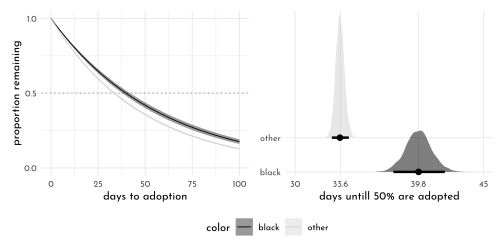

12 Rethinking: Chapter 11
God Spiked the Integers
by Richard McElreath, building on the Summaries by Solomon Kurz.
12.1 Binomial Regression
12.1.1 Logistic Regression: Prosocial chimpanzees
using a logit link function:
library(rethinking)
data(chimpanzees)translating the prosoc_left and the condition columns into the aggregated column treatment:
prosoc_left == 0andcondition == 0prosoc_left == 1andcondition == 0prosoc_left == 0andcondition == 1prosoc_left == 1andcondition == 1
data_chimp <- chimpanzees %>%
as_tibble() %>%
mutate(treatment = 1 + prosoc_left + 2 * condition,
side_idx = prosoc_left + 1, # right 1, left 2
condition_idx = condition + 1) # no partner 1, partner 2
xtabs(~ treatment + prosoc_left + condition, data_chimp)#> , , condition = 0
#>
#> prosoc_left
#> treatment 0 1
#> 1 126 0
#> 2 0 126
#> 3 0 0
#> 4 0 0
#>
#> , , condition = 1
#>
#> prosoc_left
#> treatment 0 1
#> 1 0 0
#> 2 0 0
#> 3 126 0
#> 4 0 126\[ \begin{array}{rclr} L_{i} & \sim & Binomial(1, p_{i}) & \textrm{[likelihood]}\\ \textrm{logit}(p_{i}) & = & \alpha_{ACTOR[i]} + \beta_{TREATMENT[i]} & \textrm{[linear model]}\\ \alpha_{j} & \sim & ... & \textrm{[$\alpha$ prior]}\\ \beta_{k} & \sim & ... & \textrm{[$\beta$ prior]} \end{array} \]
\[ Binomial(1, p_{i}) = Bernoulli(p_{i}) \]
Finding the right priors
\[ \begin{array}{rclr} L_{i} & \sim & Binomial(1, p_{i}) & \textrm{[likelihood]}\\ \textrm{logit}(p_{i}) & = & \alpha & \textrm{[linear model]}\\ \alpha & \sim & Normal(0, \omega) & \textrm{[$\alpha$ prior]}\\ \end{array} \]
Starting with \(\omega = 10\) to demonstrate the effect of flat priors.
model_omega10 <- quap(
flist = alist(
pulled_left ~ dbinom( 1, p ),
logit(p) <- alpha,
alpha ~ dnorm( 0, 10 )
),
data = data_chimp
)
model_omega15 <- quap(
flist = alist(
pulled_left ~ dbinom( 1, p ),
logit(p) <- alpha,
alpha ~ dnorm( 0, 1.5 )
),
data = data_chimp
)
set.seed(1999)
omega_prior <- extract.prior(model_omega10) %>%
as_tibble() %>%
mutate(omega = 10) %>%
bind_rows(extract.prior(model_omega15) %>%
as_tibble() %>%
mutate(omega = 1.5)) %>%
mutate(p = inv_logit(alpha))
p1 <- omega_prior %>%
ggplot(aes(x = p)) +
geom_density(adjust = .15,
aes(color = factor(omega), fill = after_scale(clr_alpha(color)))) +
scale_color_manual("omega", values = c(`10` = clr0d, `1.5` = clr2)) +
theme(legend.position = "bottom")model_beta10 <- quap(
flist = alist(
pulled_left ~ dbinom( 1, p ),
logit(p) <- alpha + beta[treatment],
alpha ~ dnorm( 0, 1.5 ),
beta[treatment] ~ dnorm(0,10)
),
data = data_chimp
)
model_beta05 <- quap(
flist = alist(
pulled_left ~ dbinom( 1, p ),
logit(p) <- alpha + beta[treatment],
alpha ~ dnorm( 0, 1.5 ),
beta[treatment] ~ dnorm(0,0.5)
),
data = data_chimp
)
extract_logit <- function(model, beta_sd, seed = 42){
set.seed(seed)
extract.prior(model, n = 1e4) %>%
as.data.frame() %>%
as_tibble() %>%
mutate(across(beta.1:beta.4, .fns = function(x){inv_logit(x + alpha)},
.names = "p_{.col}"),
beta_sd = beta_sd)
}
data_beta <- list(model_beta10, model_beta05) %>%
map2_dfr(.y = c(10, .5),
.f = extract_logit) %>%
mutate(treatment_diff_1_2 = abs(`p_beta.1` - `p_beta.2`))
p2 <- data_beta %>%
ggplot(aes(x = treatment_diff_1_2)) +
geom_density(adjust = .15,
aes(color = factor(beta_sd), fill = after_scale(clr_alpha(color)))) +
scale_color_manual("sd beta", values = c(`10` = clr0d, `0.5` = clr2)) +
theme(legend.position = "bottom")
p1 + p2
\[ \begin{array}{rclr} L_{i} & \sim & Binomial(1, p_{i}) & \textrm{[likelihood]}\\ \textrm{logit}(p_{i}) & = & \alpha_{ACTOR[i]} + \beta_{TREATMENT[i]} & \textrm{[linear model]}\\ \alpha_{j} & \sim & Normal(0, 1.5) & \textrm{[$\alpha$ prior]}\\ \beta_{k} & \sim & Normal(0, 0.5) & \textrm{[$\beta$ prior]} \end{array} \]
data_chimp_list <- data_chimp %>%
dplyr::select(pulled_left, actor, treatment) %>%
mutate(treatment = as.integer(treatment)) %>%
as.list()
model_chimp <- ulam(
flist = alist(
pulled_left ~ dbinom( 1, p ),
logit(p) <- alpha[actor] + beta[treatment],
alpha[actor] ~ dnorm( 0, 1.5 ),
beta[treatment] ~ dnorm(0,0.5)
),
data = data_chimp_list,
chains = 4, cores = 4,
log_lik = TRUE
)precis(model_chimp, depth = 2) %>%
knit_precis()| param | mean | sd | 5.5% | 94.5% | n_eff | Rhat4 |
|---|---|---|---|---|---|---|
| alpha[1] | -0.46 | 0.33 | -1.01 | 0.07 | 734.48 | 1 |
| alpha[2] | 3.89 | 0.76 | 2.77 | 5.18 | 1003.64 | 1 |
| alpha[3] | -0.76 | 0.34 | -1.31 | -0.24 | 759.77 | 1 |
| alpha[4] | -0.75 | 0.35 | -1.32 | -0.21 | 784.36 | 1 |
| alpha[5] | -0.45 | 0.33 | -0.98 | 0.07 | 702.23 | 1 |
| alpha[6] | 0.47 | 0.33 | -0.08 | 1.00 | 694.50 | 1 |
| alpha[7] | 1.94 | 0.43 | 1.25 | 2.63 | 703.21 | 1 |
| beta[1] | -0.04 | 0.29 | -0.48 | 0.44 | 662.76 | 1 |
| beta[2] | 0.48 | 0.29 | 0.03 | 0.95 | 612.98 | 1 |
| beta[3] | -0.37 | 0.29 | -0.82 | 0.09 | 701.51 | 1 |
| beta[4] | 0.38 | 0.29 | -0.09 | 0.84 | 664.27 | 1 |
chimp_posterior <- extract.samples(model_chimp) %>%
as.data.frame() %>%
as_tibble() %>%
mutate(across(starts_with("alpha"),.fns = inv_logit, .names = "p_{.col}"))
p1 <- chimp_posterior %>%
dplyr::select(starts_with("p")) %>%
pivot_longer(everything(),
names_to = "actor",
values_to = "p") %>%
mutate(actor = str_remove(actor,"p_alpha.") %>% as.integer()) %>%
group_by(actor) %>%
summarise(p = list(quantile(p, probs = c(.055, .25, .5, .75, .955))),
breaks = list(c("ll", "l", "m", "h", "hh"))) %>%
ungroup() %>%
unnest(c(p, breaks)) %>%
pivot_wider(names_from = breaks, values_from = p) %>%
ggplot(aes(y = factor(actor, levels = 7:1))) +
geom_linerange(aes(xmin = ll, xmax = hh), lwd = .2, color = clr2) +
geom_linerange(aes(xmin = l, xmax = h), lwd = .7, color = clr2) +
geom_point(aes(x = m),
size = 2, shape = 21,
color = clr2, fill = clr_lighten(clr2, .2)) +
labs(y = "actor", x = "alpha") +
coord_cartesian(xlim = c(0, 1))treatment_labels <- c("R|N", "L|N", "R|P", "L|P", "R|diff", "L|diff")
p2 <- chimp_posterior %>%
dplyr::select(starts_with("beta")) %>%
mutate(`beta.5` = `beta.1` - `beta.3` ,
`beta.6` = `beta.2` - `beta.4` ) %>%
pivot_longer(everything(),
names_to = "param",
values_to = "p") %>%
mutate(treatment = treatment_labels[str_remove(param, "beta.") %>% as.integer()]) %>%
group_by(treatment) %>%
summarise(p = list(quantile(p, probs = c(.055, .25, .5, .75, .955))),
breaks = list(c("ll", "l", "m", "h", "hh"))) %>%
ungroup() %>%
unnest(c(p, breaks)) %>%
pivot_wider(names_from = breaks, values_from = p) %>%
ggplot(aes(y = factor(treatment, levels = rev(treatment_labels)))) +
geom_rect(data = tibble(x = 1),inherit.aes = FALSE,
aes(xmin = -Inf, xmax = Inf, ymin = .5, ymax = 2.5),
color = clr0d, fill = fll0) +
geom_vline(xintercept = 0, linetype = 3, color = clr_dark) +
geom_linerange(aes(xmin = ll, xmax = hh), lwd = .2, color = clr2) +
geom_linerange(aes(xmin = l, xmax = h), lwd = .7, color = clr2) +
geom_point(aes(x = m),
size = 2, shape = 21,
color = clr2, fill = clr_lighten(clr2, .2)) +
scale_y_discrete() +
labs(y = "treatment", x = "beta")p1 + p2
Posterior prediction plots:
chimp_grid <- crossing(actor = 1:7, treatment = 1:4)
chimp_posterior_predictions <- link(model_chimp, data = chimp_grid) %>%
as.matrix() %>%
t() %>%
as_tibble() %>%
bind_cols(chimp_grid, .) %>%
pivot_longer(-c(actor, treatment), values_to = "pulled_left") %>%
dplyr::select(-name) %>%
group_by(actor, treatment) %>%
summarise(p = list(quantile(pulled_left, probs = c(.055, .25, .5, .75, .955))),
breaks = list(c("ll", "l", "m", "h", "hh"))) %>%
ungroup() %>%
unnest(c(p, breaks)) %>%
pivot_wider(names_from = breaks, values_from = p) %>%
mutate(type = "post. pred.",
side = c("L", "R")[2 - (treatment == 1 | treatment == 3)],
condition = c("N", "P")[1 + (treatment > 2)],
lab = treatment_labels[treatment])
data_chimp %>%
group_by(actor, treatment) %>%
summarise(mean_data = mean(pulled_left),
type = "data") %>%
mutate(side = c("L", "R")[2 - (treatment == 1 | treatment == 3)],
condition = c("N", "P")[1 + (treatment > 2)],
lab = treatment_labels[treatment]) %>%
ggplot(aes(x = treatment, y = mean_data)) +
geom_hline(yintercept = .5, linetype = 3, color = clr_dark) +
geom_line(aes(group = side), color = clr0dd) +
geom_point(aes(shape = condition),
color = clr0dd, fill = clr0, size = 1.8) +
geom_text(data = . %>% filter(actor == 1),
aes(y = mean_data - .2 * (1.5 - as.numeric(factor(side))),
label = lab), family = fnt_sel) +
geom_line(data = chimp_posterior_predictions,
aes(y = m, group = side), color = clr0dd) +
geom_segment(data = chimp_posterior_predictions,
inherit.aes = FALSE,
aes(x = treatment, xend = treatment,
y = ll, yend = hh),
color = clr0dd) +
geom_point(data = chimp_posterior_predictions,
inherit.aes = FALSE,
aes(x = treatment,
y = m, shape = condition),
color = clr0dd, fill = clr0, size = 1.8) +
scale_shape_manual(values = c("N" = 21, "P" = 19), guide = "none") +
facet_grid(type ~ actor) +
scale_x_discrete(expand = c(.2,.2)) +
labs(x = NULL, y = "pulled_left") +
lims(y = c(0,1)) +
theme(panel.background = element_rect(color = clr0, fill = "transparent"))
data_chimp_list2 <- data_chimp %>%
dplyr::select(pulled_left,
actor,
side_idx,
condition_idx)
model_chimp_interaction <- ulam(
flist = alist(
pulled_left ~ dbinom( 1, p ),
logit(p) <- alpha[actor] + beta_s[side_idx] + beta_c[condition_idx],
alpha[actor] ~ dnorm( 0, 1.5 ),
beta_s[side_idx] ~ dnorm(0,0.5),
beta_c[condition_idx] ~ dnorm(0,0.5)
),
data = data_chimp_list2,
chains = 4,
cores = 4,
log_lik = TRUE
)compare(model_chimp,
model_chimp_interaction, func = PSIS) %>%
knit_precis(param_name = "model")| model | PSIS | SE | dPSIS | dSE | pPSIS | weight |
|---|---|---|---|---|---|---|
| model_chimp_interaction | 530.71 | 19.17 | 0.00 | NA | 7.76 | 0.66 |
| model_chimp | 532.02 | 18.89 | 1.31 | 1.35 | 8.35 | 0.34 |
chimp_grid2 <- crossing(actor = 1:7, side_idx = 1:2, condition_idx = 1:2)
chimp_interact_posterior_predictions <- link(model_chimp_interaction,
data = chimp_grid2) %>%
as.matrix() %>%
t() %>%
as_tibble() %>%
bind_cols(chimp_grid2, .) %>%
pivot_longer(-c(actor, side_idx, condition_idx), values_to = "pulled_left") %>%
dplyr::select(-name) %>%
group_by(actor, side_idx, condition_idx) %>%
summarise(p = list(quantile(pulled_left, probs = c(.055, .25, .5, .75, .955))),
breaks = list(c("ll", "l", "m", "h", "hh"))) %>%
ungroup() %>%
unnest(c(p, breaks)) %>%
pivot_wider(names_from = breaks, values_from = p) %>%
mutate(treatment = factor(side_idx + 2 * (condition_idx - 1)))
chimp_interact_posterior_predictions %>%
ggplot(aes(x = treatment, y = m)) +
geom_hline(yintercept = .5, linetype = 3, color = clr_dark) +
geom_line(aes(y = m, group = factor(side_idx)), color = clr0dd) +
geom_segment(data = chimp_posterior_predictions,
aes(x = treatment, xend = treatment,
y = ll, yend = hh),
color = clr0dd) +
geom_point(aes(x = treatment,
y = m, shape = factor(condition_idx)),
color = clr0dd, fill = clr0, size = 1.8) +
scale_shape_manual(values = c(`1` = 21, `2` = 19), guide = "none") +
facet_grid(. ~ actor) +
scale_x_discrete(expand = c(.2,.2)) +
labs(x = NULL, y = "pulled_left") +
lims(y = c(0,1)) +
theme(axis.text.x = element_blank(),
panel.background = element_rect(color = clr0, fill = "transparent"),
panel.grid.minor.x = element_blank(),
panel.grid.major.x = element_blank())
Adding log-probability calculations to a Stan model
stan_posterior <- extract.samples(model_chimp, clean = FALSE)
str(stan_posterior)#> List of 5
#> $ alpha : num [1:2000, 1:7] -0.535 -0.495 -0.276 -0.46 -0.967 ...
#> $ beta : num [1:2000, 1:4] -0.2448 -0.4169 0.1607 -0.0796 0.4323 ...
#> $ log_lik: num [1:2000, 1:504] -0.377 -0.338 -0.637 -0.459 -0.461 ...
#> $ p : num [1:2000, 1:504] 0.314 0.287 0.471 0.368 0.369 ...
#> $ lp__ : num [1:2000(1d)] -265 -272 -266 -267 -271 ...
#> - attr(*, "source")= chr "ulam posterior: 2000 samples from object"model_chimp_stancode <- stancode(model_chimp)#> data{
#> int pulled_left[504];
#> int treatment[504];
#> int actor[504];
#> }
#> parameters{
#> vector[7] alpha;
#> vector[4] beta;
#> }
#> model{
#> vector[504] p;
#> beta ~ normal( 0 , 0.5 );
#> alpha ~ normal( 0 , 1.5 );
#> for ( i in 1:504 ) {
#> p[i] = alpha[actor[i]] + beta[treatment[i]];
#> p[i] = inv_logit(p[i]);
#> }
#> pulled_left ~ binomial( 1 , p );
#> }
#> generated quantities{
#> vector[504] log_lik;
#> vector[504] p;
#> for ( i in 1:504 ) {
#> p[i] = alpha[actor[i]] + beta[treatment[i]];
#> p[i] = inv_logit(p[i]);
#> }
#> for ( i in 1:504 ) log_lik[i] = binomial_lpmf( pulled_left[i] | 1 , p[i] );
#> }model_chimp_stan <- stan(model_code = model_chimp_stancode,
data = data_chimp_list,
chains = 4, cores = 4)compare(model_chimp,
model_chimp_stan) %>%
knit_precis(param_name = "model")| model | WAIC | SE | dWAIC | dSE | pWAIC | weight |
|---|---|---|---|---|---|---|
| model_chimp_stan | 531.67 | 18.92 | 0.0 | NA | 8.21 | 0.54 |
| model_chimp | 531.97 | 18.87 | 0.3 | 0.13 | 8.32 | 0.46 |
12.1.2 Relative Shark and Absolute Deer
Calculating the proportional odds relative effect size of switching from treatment two to four (adding a partner):
(prop_odd <- extract.samples(model_chimp) %>%
as.data.frame() %>%
as_tibble() %>%
mutate(prop_odds = exp( `beta.4` - `beta.2`)) %>%
summarise(average = mean(prop_odds)))#> # A tibble: 1 × 1
#> average
#> <dbl>
#> 1 0.931So this relates to a 6.88 % change in odds.
12.1.3 Aggregated binomial: Chimpanzees again, condensed
data_chimp_aggregated <- data_chimp %>%
group_by(treatment, actor, side_idx, condition_idx) %>%
summarise(left_pulls = sum(pulled_left)) %>%
ungroup() %>%
mutate(across(everything(), .fns = `as.integer`))model_chimp_aggregated <- ulam(
flist = alist(
left_pulls ~ dbinom( 18 , p ),
logit(p) <- alpha[actor] + beta[treatment],
alpha[actor] ~ dnorm(0, 1.5),
beta[treatment] ~ dnorm(0, 0.5)
),
data = data_chimp_aggregated,
chains = 4,
cores = 4,
log_lik = TRUE
)precis(model_chimp_aggregated, depth = 2) %>%
knit_precis(param_name = "model")| model | mean | sd | 5.5% | 94.5% | n_eff | Rhat4 |
|---|---|---|---|---|---|---|
| alpha[1] | -0.46 | 0.32 | -0.97 | 0.07 | 795.24 | 1.01 |
| alpha[2] | 3.87 | 0.72 | 2.82 | 5.10 | 1070.21 | 1.00 |
| alpha[3] | -0.75 | 0.33 | -1.27 | -0.24 | 736.57 | 1.01 |
| alpha[4] | -0.75 | 0.33 | -1.28 | -0.24 | 741.50 | 1.01 |
| alpha[5] | -0.46 | 0.32 | -0.96 | 0.05 | 764.71 | 1.00 |
| alpha[6] | 0.47 | 0.33 | -0.05 | 0.98 | 831.35 | 1.00 |
| alpha[7] | 1.96 | 0.41 | 1.32 | 2.62 | 1041.00 | 1.01 |
| beta[1] | -0.03 | 0.28 | -0.49 | 0.39 | 657.78 | 1.01 |
| beta[2] | 0.48 | 0.27 | 0.04 | 0.94 | 585.93 | 1.01 |
| beta[3] | -0.38 | 0.28 | -0.80 | 0.06 | 719.18 | 1.01 |
| beta[4] | 0.38 | 0.27 | -0.07 | 0.81 | 683.31 | 1.00 |
clr_current <- clr1
chimp_posterior_aggregated <- extract.samples(model_chimp_aggregated) %>%
as.data.frame() %>%
as_tibble() %>%
mutate(across(starts_with("alpha"),.fns = inv_logit, .names = "p_{.col}"))
p1 <- chimp_posterior_aggregated %>%
dplyr::select(starts_with("p")) %>%
pivot_longer(everything(),
names_to = "actor",
values_to = "p") %>%
mutate(actor = str_remove(actor,"p_alpha.") %>% as.integer()) %>%
group_by(actor) %>%
summarise(p = list(quantile(p, probs = c(.055, .25, .5, .75, .955))),
breaks = list(c("ll", "l", "m", "h", "hh"))) %>%
ungroup() %>%
unnest(c(p, breaks)) %>%
pivot_wider(names_from = breaks, values_from = p) %>%
ggplot(aes(y = factor(actor, levels = 7:1))) +
geom_linerange(aes(xmin = ll, xmax = hh), lwd = .2, color = clr_current) +
geom_linerange(aes(xmin = l, xmax = h), lwd = .7, color = clr_current) +
geom_point(aes(x = m),
size = 2, shape = 21,
color = clr_current, fill = clr_lighten(clr_current, .2)) +
labs(y = "actor", x = "alpha") +
coord_cartesian(xlim = c(0, 1))p2 <- chimp_posterior_aggregated %>%
dplyr::select(starts_with("beta")) %>%
mutate(`beta.5` = `beta.1` - `beta.3` ,
`beta.6` = `beta.2` - `beta.4` ) %>%
pivot_longer(everything(),
names_to = "param",
values_to = "p") %>%
mutate(treatment = treatment_labels[str_remove(param, "beta.") %>% as.integer()]) %>%
group_by(treatment) %>%
summarise(p = list(quantile(p, probs = c(.055, .25, .5, .75, .955))),
breaks = list(c("ll", "l", "m", "h", "hh"))) %>%
ungroup() %>%
unnest(c(p, breaks)) %>%
pivot_wider(names_from = breaks, values_from = p) %>%
ggplot(aes(y = factor(treatment, levels = rev(treatment_labels)))) +
geom_rect(data = tibble(x = 1), inherit.aes = FALSE,
aes(xmin = -Inf, xmax = Inf, ymin = .5, ymax = 2.5),
color = clr0d, fill = fll0) +
geom_vline(xintercept = 0, linetype = 3, color = clr_dark) +
geom_linerange(aes(xmin = ll, xmax = hh), lwd = .2, color = clr_current) +
geom_linerange(aes(xmin = l, xmax = h), lwd = .7, color = clr_current) +
geom_point(aes(x = m),
size = 2, shape = 21,
color = clr_current, fill = clr_lighten(clr_current, .2)) +
scale_y_discrete() +
labs(y = "treatment", x = "beta")p1 + p2
compare(model_chimp,
model_chimp_aggregated,
func = PSIS) %>%
knit_precis(param_name = "model")| model | PSIS | SE | dPSIS | dSE | pPSIS | weight |
|---|---|---|---|---|---|---|
| model_chimp_aggregated | 113.92 | 8.40 | 0.00 | NA | 8.25 | 1 |
| model_chimp | 532.02 | 18.89 | 418.11 | 39.99 | 8.35 | 0 |
The huge difference in PSIS are due to the way the data is organized, which makes the multiplicity effect the aggregate model (eg. all they ways 6 successes in 9 trials can be arranged).
#> deviance of aggregated 6 in 9
-2 * dbinom(x = 6 , size = 9, prob = .2, log = TRUE)#> [1] 11.79048#> deviance of dis-aggregated
-2 * sum( dbern(x = rep(1:0, c(6, 3)), prob = .2, log = TRUE) )#> [1] 20.65212Some Pareto k values are high (>0.5). Set pointwise=TRUE to inspect individual points.
.
Warning messages:
1: In compare(model_chimp, model_chimp_aggregated, func = PSIS) :
Different numbers of observations found for at least two models.
Model comparison is valid only for models fit to exactly the same observations.
Number of observations for each model:
model_chimp 504
model_chimp_aggregated 28 The high Pareto k values result from the fact that the aggregation turns the leave one out procedure into a leave 18 out procedure here.
If you want to calculate WAIC or PSIS, you should use a logistic regression data format, not an aggregated format.
12.1.4 Aggregated binomial: Graduate School Admissions
data(UCBadmit)
data_ucb <- UCBadmit %>%
as_tibble() %>%
mutate(gid = 3L - as.integer(factor(applicant.gender)))\[ \begin{array}{rclr} A_{i} & \sim & Binomial(N_{i}, p_{i}) & \textrm{[likelihood]}\\ \textrm{logit}(p_{i}) & = & \alpha_{GID[i]} & \textrm{[linear model]}\\ \alpha_{j} & \sim & Normal(0, 1.5) & \textrm{[$\alpha$ prior]}\\ \end{array} \]
data_ucb_list <- data_ucb %>%
dplyr::select(admit, applications, gid) %>%
as.list()
model_ucb <- ulam(
flist = alist(
admit ~ dbinom( applications, p ),
logit(p) <- alpha[gid],
alpha[gid] ~ dnorm( 0, 1.5 )
),
data = data_ucb_list,
chains = 4,
cores = 4,
log_lik = TRUE
)precis(model_ucb, depth = 2) %>%
knit_precis()| param | mean | sd | 5.5% | 94.5% | n_eff | Rhat4 |
|---|---|---|---|---|---|---|
| alpha[1] | -0.22 | 0.04 | -0.28 | -0.16 | 1509.90 | 1 |
| alpha[2] | -0.83 | 0.05 | -0.91 | -0.75 | 1477.76 | 1 |
Calculating a contrast to quantify the difference in the posterior between ♀️ and ♂️ applicants.
posterior_ucb <- extract.samples(model_ucb) %>%
as.data.frame() %>%
as_tibble() %>%
mutate(diff_absolute = `alpha.1` - `alpha.2`,
diff_relative = inv_logit(`alpha.1`) - inv_logit(`alpha.2`))
clr_current <- clr2
precis(posterior_ucb) %>%
knit_precis()| param | mean | sd | 5.5% | 94.5% | histogram |
|---|---|---|---|---|---|
| alpha.1 | -0.22 | 0.04 | -0.28 | -0.16 | ▁▁▂▃▇▇▇▅▃▁▁▁▁ |
| alpha.2 | -0.83 | 0.05 | -0.91 | -0.75 | ▁▁▁▅▇▃▁▁▁ |
| diff_absolute | 0.61 | 0.06 | 0.51 | 0.71 | ▁▁▁▂▇▇▅▁▁▁ |
| diff_relative | 0.14 | 0.01 | 0.12 | 0.16 | ▁▁▁▁▃▇▇▅▂▁▁▁ |
Notice the discrepancy, between the model and the data: the model expects ♀️ applicants to do 14% worse than ♂️, however that is only the case in two departments (C and E).
ucb_grid <- crossing(dept = factor(LETTERS[1:6]),
gid = 1:2) %>%
left_join(data_ucb %>% dplyr::select(dept, gid, applications))
ucb_posterior_predictions <- sim(model_ucb,
data = ucb_grid) %>%
as.matrix() %>%
t() %>%
as_tibble() %>%
bind_cols(ucb_grid, .) %>%
pivot_longer(-c(dept, gid, applications), values_to = "admit") %>%
dplyr::select(-name) %>%
group_by(dept, gid, applications) %>%
summarise(p = quantile(admit/applications, probs = c(.055, .25, .5, .75, .955)),
median = median(admit),
breaks = c("ll", "l", "m", "h", "hh")) %>%
ungroup() %>%
pivot_wider(names_from = breaks, values_from = p) %>%
mutate(type = "post. pred.",
x = 2 * (as.integer(as.factor(dept)) - 1) + gid)
library(geomtextpath)
data_ucb %>%
group_by(dept, gid) %>%
summarise(mean_data = mean(admit/applications),
type = "data") %>%
mutate(x = 2 * (as.integer(dept) - 1) + gid) %>%
ggplot(aes(x = x, y = mean_data)) +
geom_segment(data = ucb_posterior_predictions,
aes(x = x, xend = x,
y = ll, yend = hh),
color = clr_current) +
geom_point(data = ucb_posterior_predictions,
aes(y = m, shape = factor(gid)),
color = clr_current,
fill = clr_lighten(clr_current),
size = 1.8) +
geom_textline(aes(label = dept, group = dept),
color = clr0dd, family = fnt_sel) +
geom_point(aes(shape = factor(gid)),
color = clr0dd, fill = clr0, size = 1.8) +
scale_shape_manual(values = c(`2` = 21, `1` = 19),
guide = "none") +
scale_x_continuous(breaks = 2 * (1:6) - .5,
labels = LETTERS[1:6])+
labs(x = "department", y = "admit") +
lims(y = c(0,1)) +
theme(panel.background = element_rect(color = clr0,
fill = "transparent"),
panel.grid.major.x = element_blank())
\[ \begin{array}{rclr} A_{i} & \sim & Binomial(N_{i}, p_{i}) & \textrm{[likelihood]}\\ \textrm{logit}(p_{i}) & = & \alpha_{GID[i]} + \delta_{DEPT[i]}& \textrm{[linear model]}\\ \alpha_{j} & \sim & Normal(0, 1.5) & \textrm{[$\alpha$ prior]}\\ \delta_{k} & \sim & Normal(0, 1.5) & \textrm{[$\delta$ prior]}\\ \end{array} \]
data_ucb_list2 <- data_ucb %>%
mutate(dept_idx = as.numeric(dept)) %>%
dplyr::select(dept_idx, admit, applications, gid) %>%
as.list()
model_ucb_dept <- ulam(
flist = alist(
admit ~ dbinom( applications, p ),
logit(p) <- alpha[gid] + delta[dept_idx],
alpha[gid] ~ dnorm( 0, 1.5 ),
delta[dept_idx] ~ dnorm( 0, 1.5 )
),
data = data_ucb_list2,
iter = 4000,
chains = 4,
cores = 4,
log_lik = TRUE
)precis(model_ucb_dept, depth = 2) %>%
knit_precis()| param | mean | sd | 5.5% | 94.5% | n_eff | Rhat4 |
|---|---|---|---|---|---|---|
| alpha[1] | -0.53 | 0.51 | -1.36 | 0.30 | 735.71 | 1.00 |
| alpha[2] | -0.43 | 0.52 | -1.27 | 0.39 | 733.86 | 1.01 |
| delta[1] | 1.11 | 0.52 | 0.28 | 1.94 | 742.15 | 1.00 |
| delta[2] | 1.06 | 0.52 | 0.23 | 1.90 | 744.28 | 1.01 |
| delta[3] | -0.15 | 0.52 | -0.99 | 0.69 | 736.76 | 1.01 |
| delta[4] | -0.18 | 0.52 | -1.02 | 0.65 | 734.53 | 1.01 |
| delta[5] | -0.63 | 0.52 | -1.47 | 0.21 | 748.80 | 1.01 |
| delta[6] | -2.18 | 0.53 | -3.04 | -1.32 | 772.62 | 1.01 |
posterior_ucb_dept <- extract.samples(model_ucb_dept) %>%
as.data.frame() %>%
as_tibble() %>%
mutate(diff_absolute = `alpha.1` - `alpha.2`,
diff_relative = inv_logit(`alpha.1`) - inv_logit(`alpha.2`))
precis(posterior_ucb_dept %>% dplyr::select(starts_with("diff"))) %>%
knit_precis(param_name = "column")| column | mean | sd | 5.5% | 94.5% | histogram |
|---|---|---|---|---|---|
| diff_absolute | -0.10 | 0.08 | -0.23 | 0.03 | ▁▁▁▂▅▇▇▅▂▁▁▁▁ |
| diff_relative | -0.02 | 0.02 | -0.05 | 0.01 | ▁▁▁▁▂▃▅▇▇▅▂▁▁▁▁ |
Now, ♂️ applicants seem to have minimal worse chances than ♀️ applicants (~2%).
Why did adding departments to the model change inference about the gender so much?
data_ucb %>%
group_by(dept) %>%
mutate(all_n = sum(applications)) %>%
ungroup() %>%
mutate(fraction = round(applications / all_n, digits = 2)) %>%
dplyr::select(dept, applicant.gender, fraction) %>%
pivot_wider(names_from = dept, values_from = fraction)#> # A tibble: 2 × 7
#> applicant.gender A B C D E F
#> <fct> <dbl> <dbl> <dbl> <dbl> <dbl> <dbl>
#> 1 male 0.88 0.96 0.35 0.53 0.33 0.52
#> 2 female 0.12 0.04 0.65 0.47 0.67 0.48There is a causal path \(G \rightarrow D \rightarrow A\) which is closed by conditioning on \(D\) (this is an example of a mediation analysis). However issues arise if there is an unobserved confound \(U\).
dag_ucb <- dagify(
A ~ D + G,
D ~ G,
exposure = "A",
outcome = "G",
coords = tibble(name = c("G", "D", "A"),
x = c(0, .5, 1),
y = c(0, 1, 0)))
dag_ucb_u <- dagify(
A ~ D + G + U,
D ~ G + U,
exposure = "A",
outcome = "G",
coords = tibble(name = c("G", "D", "A", "U"),
x = c(0, .5, 1, 1),
y = c(0, 1, 0, 1)))
p1 <- dag_ucb %>%
fortify() %>%
mutate(stage = if_else(name == "A", "response",
if_else(name %in% c("G", "D"),
"predictor", "confounds"))) %>%
plot_dag(clr_in = clr_current)
p2 <- dag_ucb_u %>%
fortify() %>%
mutate(stage = if_else(name == "A", "response",
if_else(name %in% c("G", "D"),
"predictor", "confounds"))) %>%
plot_dag(clr_in = clr_current)
p1 + p2 &
coord_fixed(ratio = .5) &
scale_y_continuous(limits = c(-.1, 1.1)) &
scale_x_continuous(limits = c(-.1, 1.1)) &
theme(plot.title = element_text(hjust = .5, family = fnt_sel),
plot.tag = element_text(family = fnt_sel))
as_draws_df(model_ucb_dept@stanfit) %>%
as_tibble() %>%
dplyr::select(starts_with("alpha"),
starts_with("delta")) %>%
ggpairs(
lower = list(continuous = wrap(my_lower)),
diag = list(continuous = wrap(my_diag, fill = fll0,
color = clr0d, adjust = .7)),
upper = list(continuous = wrap(my_upper ,
size = 5, color = "black", family = fnt_sel)) ) +
theme(panel.border = element_rect(color = clr_dark, fill = "transparent"))
12.2 Poisson Regression
y <- rbinom( 1e5, 1000, 1/1000)
c(mean(y), var(y))#> [1] 0.9969100 0.9949704Models build upon the poisson distribution (for uncountable, or uncoutably large number of trials \(N\)), are even simpler than binomial or Gaussian model, because there is only a single parameter that describes its shape:
\[ y_{i} \sim \]
The conventional link function for a Poisson Model is the log link:
\[ \begin{array}{rclr} y_{i} & \sim & Poisson(\lambda_{i}) & \textrm{[likelihood]}\\ \textrm{log}(\lambda_{i}) & = & \alpha + \beta(x_{i} - \bar{x}) & \textrm{[linear model]} \end{array} \]
12.2.1 Oceanic Tool Complexity
library(sf)
data(Kline)
data_kline <- Kline %>%
as_tibble() %>%
mutate(pop_log_scl = scale(log(population))[,1],
contact_idx = 3L - as.integer(factor(contact)))
data_kline_sf <- read_sf("data/pacific.gpkg") %>%
left_join(Kline) %>%
mutate(coords = st_centroid(geom) %>% st_coordinates() %>% as_tibble() ) %>%
mutate(x = coords$X,
y = coords$Y) %>%
dplyr::select(-coords)library(rnaturalearth)
crs_pac <- 3832
long_lim <- c(100,-140)
lat_lim <- c(-25, 25)
bb <- tibble(x = long_lim[c(1,1,2,2,1)],
y = lat_lim[c(1,2,2,1,1)]) %>%
st_as_sf(coords = c("x","y"), crs = 4326) %>%
st_transform(crs = crs_pac) %>%
st_combine() %>%
st_cast("POLYGON")
dateline <- tibble(x = c(180,180),
y = lat_lim) %>%
st_as_sf(coords = c("x","y"), crs = 4326) %>%
st_transform(crs = crs_pac) %>%
st_combine() %>%
st_cast("LINESTRING")
equator <- tibble(x = long_lim,
y = c(0, 0)) %>%
st_as_sf(coords = c("x","y"), crs = 4326) %>%
st_transform(crs = crs_pac) %>%
st_combine() %>%
st_cast("LINESTRING")
coast <- read_sf("~/work/geo_store/natural_earth/ne_110m_land.shp") %>%
st_transform(crs = crs_pac) %>%
st_intersection(bb)
library(raster)
library(ggspatial)
# library(marmap)
# bat_l <- marmap::getNOAA.bathy(long_lim[1], 180,
# lat_lim[1], lat_lim[2], resolution = 5)
#
# bat_r <- marmap::getNOAA.bathy(-180, long_lim[2],
# lat_lim[1], lat_lim[2], resolution = 5)
#
# bat_l_proj <- projectRaster(marmap::as.raster(bat_l), crs = crs(bb))
# bat_r_proj <- projectRaster(marmap::as.raster(bat_r), crs = crs(bb))
# bat <- mosaic(bat_l_proj, bat_r_proj,tolerance = 0.1, fun = mean)
bat <- raster("data/pacific.tif") %>%
raster::crop(y = as_Spatial(bb)) %>%
raster::mask(mask = as_Spatial(bb))
ggplot() +
geom_raster(data = df_spatial(bat),
aes(x = x, y = y, fill = band1)) +
geom_sf(data = bb, fill = "transparent", color = clr0d) +
geom_sf(data = dateline, size = .3, linetype = 3, color = clr_dark) +
geom_sf(data = equator, size = .3, linetype = 3, color = clr_dark) +
geom_sf(data = coast, color = clr0dd, fill = clr0, size = .2) +
geom_sf(data = data_kline_sf,
color = clr_current,
fill = clr_lighten(clr_current),
size = .4) +
ggrepel::geom_text_repel(data = data_kline_sf,
aes(x = x,
y = y,
label = culture),
family = fnt_sel) +
annotation_north_arrow(style = north_arrow_fancy_orienteering(text_family = fnt_sel)) +
annotation_scale(style = "ticks", text_family = fnt_sel) +
scale_fill_gradientn(colours = c("white", "black") %>%
clr_lighten(.35),
guide = "none") +
coord_sf(crs = crs_pac, expand = 0) +
theme(panel.grid = element_blank(),
axis.title = element_blank())
data_kline#> # A tibble: 10 × 7
#> culture population contact total_tools mean_TU pop_log_scl contact_idx
#> <fct> <int> <fct> <int> <dbl> <dbl> <int>
#> 1 Malekula 1100 low 13 3.2 -1.29 1
#> 2 Tikopia 1500 low 22 4.7 -1.09 1
#> 3 Santa Cruz 3600 low 24 4 -0.516 1
#> 4 Yap 4791 high 43 5 -0.329 2
#> 5 Lau Fiji 7400 high 33 5 -0.0443 2
#> 6 Trobriand 8000 high 19 4 0.00667 2
#> 7 Chuuk 9200 high 40 3.8 0.0981 2
#> 8 Manus 13000 low 28 6.6 0.324 1
#> 9 Tonga 17500 high 55 5.4 0.519 2
#> 10 Hawaii 275000 low 71 6.6 2.32 1modeling the idea that:
- the number of tools increases with the log
populationsize - the number of tools increases with the
contactrate among islands - the impact of
populationon tool counts is moderated by highcontact(looking for a positive interaction)
\[ \begin{array}{rclr} T_{i} & \sim & Poisson(\lambda_{i}) & \textrm{[likelihood]}\\ \textrm{log}(\lambda_{i}) & = & \alpha_{CID[i]} + \beta_{CID[i]}~\textrm{log}~P_{i}& \textrm{[linear model]}\\ \alpha_{j}& \sim & ... & \textrm{[$\alpha$ prior]}\\ \beta_{j}& \sim & ... & \textrm{[$\beta$ prior]}\\ \end{array} \]
Prior considerations (first for \(\alpha\)):
\[ \begin{array}{rclr} T_{i} & \sim & Poisson(\lambda_{i}) & \textrm{[likelihood]}\\ \textrm{log}(\lambda_{i}) & = & \alpha & \textrm{[linear model]}\\ \alpha& \sim & Normal( 0, 10 ) & \textrm{[$\alpha$ prior]}\\ \end{array} \]
ggplot() +
stat_function(fun = function(x){dlnorm(x, 3, .5)},
xlim = c(0, 100), n = 201,
geom = "area", color = clr_current, fill = fll_current())+
stat_function(fun = function(x){dlnorm(x, 0, 10)},
xlim = c(0, 100), n = 201,
geom = "area", color = clr0d, fill = fll0) +
geom_richtext(data = tibble(x = c(12.5, 37.5),
y = c(.065, .035),
lab = c(glue("*{mth('\U03B1')}* {mth('\U007E')} dnorm(0, 10)"),
glue("*{mth('\U03B1')}* {mth('\U007E')} dnorm(3, 0.5)")),
prior = c("wide", "narrow")),
aes(x = x, y = y, color = prior, label = lab ),
hjust = -.05, size = 5,
fill = NA, label.color = NA,
label.padding = grid::unit(rep(0, 4), "pt"),
family = fnt_sel) +
scale_color_manual(values = c(narrow = clr_current, wide = clr0dd),
guide = "none") +
labs(x = "mean number of tools", y = "density")
Mean of the narrow curve (\(exp(\mu + \sigma^2 / 2)\)):
alpha <- rnorm(1e4, 0, 10)
lambda <- exp(alpha)
mean(lambda)#> [1] 7.778822e+13tibble(prior = c( "wide", "narrow"),
mean = c(exp(0 + 10 ^2 /2),
exp(3 + .5 ^2 /2)))#> # A tibble: 2 × 2
#> prior mean
#> <chr> <dbl>
#> 1 wide 5.18e21
#> 2 narrow 2.28e 1mean_weight <- function(mu, sigma){exp(mu + sigma ^2 /2)}
(prior_tab <- crossing(mu = c(0, 1.5, 3, 4),
sigma = c(5, 1, .5, .1)) %>%
mutate(RN = row_number(),
mean = map2_dbl(mu, sigma, mean_weight)) )#> # A tibble: 16 × 4
#> mu sigma RN mean
#> <dbl> <dbl> <int> <dbl>
#> 1 0 0.1 1 1.01
#> 2 0 0.5 2 1.13
#> 3 0 1 3 1.65
#> 4 0 5 4 268337.
#> 5 1.5 0.1 5 4.50
#> 6 1.5 0.5 6 5.08
#> 7 1.5 1 7 7.39
#> 8 1.5 5 8 1202604.
#> 9 3 0.1 9 20.2
#> 10 3 0.5 10 22.8
#> 11 3 1 11 33.1
#> 12 3 5 12 5389698.
#> 13 4 0.1 13 54.9
#> 14 4 0.5 14 61.9
#> 15 4 1 15 90.0
#> 16 4 5 16 14650719.ggplot() +
(pmap(prior_tab, .f = function(mu, sigma,...){
force(mu)
force(sigma)
return(geom_function(data = tibble(#x = 0:150,
mu = mu),
fun = function(x, mu, sigma,...){
dlnorm(x, mu, sigma)},
aes(color = factor(mu)),
xlim = c(0, 150),
n = 201,
args = list(mu = mu, sigma = sigma)))
})) +
facet_wrap(mu ~ ., scales = "free_y", labeller = label_both) +
scale_color_manual(values = c(`0` = clr0d, `1.5` = clr1, `3` = clr2, `4` = clr3),
guide = "none") +
labs(x = "mean number of tools", y = "density")Now for the \(\beta\) prior:
n <- 100
label_strp <- function(prior){glue("beta {mth('\U007E')} Normal({str_remove(prior,'b')})")}
tibble(idx = 1:n,
a = rnorm(n, mean = 3, sd = 0.5)) %>%
mutate(`b0, 10` = rnorm(n, mean = 0 , sd = 10),
`b0, 0.2` = rnorm(n, mean = 0 , sd = 0.2)) %>%
pivot_longer(contains("b"),
values_to = "b",
names_to = "prior") %>%
mutate(prior = label_strp(prior),
prior = factor(prior, levels = label_strp(c("b0, 10", "b0, 0.2"))) ) %>%
expand(nesting(idx, a, b, prior),
x = seq(from = -2, to = 2, length.out = 100)) %>%
ggplot(aes(x = x, y = exp(a + b * x), group = idx)) +
geom_line(size = .2, color = clr_alpha(clr_current, .25)) +
labs(x = "log population (std)",
y = "total tools") +
coord_cartesian(ylim = c(0, 100)) +
facet_wrap(~ prior) +
theme(strip.text = element_markdown())
prior <- tibble(idx = 1:n,
a = rnorm(n, mean = 3, sd = 0.5),
b = rnorm(n, mean = 0, sd = 0.2)) %>%
expand(nesting(idx, a, b),
x = seq(from = log(100), to = log(200000),
length.out = 100))
p1 <- prior %>%
ggplot(aes(x = x, y = exp(a + b * x), group = idx)) +
geom_line(size = .2, color = clr_alpha(clr_current, .25)) +
geom_hline(yintercept = 100, linetype = 3, size = .6,
color = clr_dark) +
labs(subtitle = glue("alpha {mth('\U007E')} Normal(3, 0.5); beta {mth('\U007E')} Normal(0, 0.2)"),
x = "log population",
y = "total tools") +
coord_cartesian(xlim = c(log(100), log(200000)),
ylim = c(0, 500))
p2 <- prior %>%
ggplot(aes(x = exp(x), y = exp(a + b * x), group = idx)) +
geom_line(size = .2, color = clr_alpha(clr_current, .4)) +
geom_hline(yintercept = 100, linetype = 3, size = .6,
color = clr_dark) +
labs(subtitle = glue("alpha {mth('\U007E')} Normal(3, 0.5); beta {mth('\U007E')} Normal(0, 0.2)"),
x = "population",
y = "total tools") +
coord_cartesian(xlim = c(100, 200000),
ylim = c(0, 500))
p1 + p2 & theme(plot.subtitle = element_markdown(size = 8, hjust = .5))
Using a log link function, induces diminishing returns due to establishing a log-linear relationship.
Finally, we can create the model(s) - one with interaction and one simpler one that is intercept-only.
data_kline_list <- data_kline %>%
dplyr::select(total_tools,
pop_log_scl,
contact_idx) %>%
as.list()
#> intercept only
model_ocean_intercept <- ulam(
flist = alist(
total_tools ~ dpois(lambda),
log(lambda) <- alpha,
alpha ~ dnorm(3, 0.5)
),
data = data_kline_list,
chains = 4,
cores = 4,
log_lik = TRUE
)
#> interaction model
model_ocean_interact <- ulam(
flist = alist(
total_tools ~ dpois(lambda),
log(lambda) <- alpha[contact_idx] + beta[contact_idx] * pop_log_scl,
alpha[contact_idx] ~ dnorm(3, 0.5),
beta[contact_idx] ~ dnorm(0, 0.2)
),
data = data_kline_list,
chains = 4,
cores = 4,
log_lik = TRUE
)compare(model_ocean_intercept,
model_ocean_interact,
func = PSIS) %>%
knit_precis(param_name = "model")| model | PSIS | SE | dPSIS | dSE | pPSIS | weight |
|---|---|---|---|---|---|---|
| model_ocean_interact | 84.62 | 13.05 | 0.00 | NA | 6.60 | 1 |
| model_ocean_intercept | 143.47 | 34.71 | 58.85 | 33.98 | 9.67 | 0 |
#> Some Pareto k values are high (>0.5). Set pointwise=TRUE to inspect individual points.
#> Some Pareto k values are high (>0.5). Set pointwise=TRUE to inspect individual points.The effective number of parameters (pPSIS / pWAIC) is actually larger for the model with fewer parameters (model_ocean_intercept) 😲.
\(\rightarrow\) the clear relationship of overfitting and the number of parameters only holds for simple linear regressions with flat priors!
Checking the influential points (with high Pareto k values) through posterior prediction plots:
ocean_k_values <- PSIS(model_ocean_interact, pointwise = TRUE) %>%
bind_cols(data_kline, .)
n <- 101
ocean_grid <- crossing(pop_log_scl = seq(-1.4, 3, length.out = n),
contact_idx = 1:2)
ocean_posterior_predictions <- link(model_ocean_interact,
data = ocean_grid) %>%
as.matrix() %>%
t() %>%
as_tibble() %>%
bind_cols(ocean_grid, .) %>%
pivot_longer(-c(pop_log_scl, contact_idx), values_to = "total_tools") %>%
dplyr::select(-name) %>%
group_by(pop_log_scl, contact_idx) %>%
summarise(p = list(quantile(total_tools, probs = c(.055, .25, .5, .75, .955))),
breaks = list(c("ll", "l", "m", "h", "hh"))) %>%
ungroup() %>%
unnest(c(p, breaks)) %>%
pivot_wider(names_from = breaks, values_from = p) %>%
mutate(population = exp((pop_log_scl *
sd(log(data_kline$population))) +
mean(log(data_kline$population))))
p1 <- ocean_posterior_predictions %>%
ggplot(aes(x = pop_log_scl, y = total_tools)) +
geom_smooth(aes(ymin = ll, y = m, ymax = hh,
group = factor(contact_idx),
color = factor(contact_idx),
fill = after_scale(clr_alpha(color))),
stat = "identity", size = .3) +
geom_point(data = ocean_k_values,
aes(color = factor(contact_idx),
fill = after_scale(clr_alpha(color)),
size = k),
shape = 21) +
ggrepel::geom_text_repel(data = ocean_k_values %>% filter(k > .5),
aes(label = str_c(culture, " (", round(k, digits = 2), ")")),
family = fnt_sel,nudge_y = 6, min.segment.length = 15) +
scale_color_manual(values = c(`1` = clr_current, `2` = clr0dd), guide = "none") +
scale_size_continuous(guide = "none")+
coord_cartesian(ylim = c(0, 90), x = c(-1.4, 3), expand = 0) +
labs(subtitle = "on log scale")
p2 <- ocean_posterior_predictions %>%
ggplot(aes(x = population, y = total_tools)) +
geom_smooth(aes(ymin = ll, y = m, ymax = hh,
group = factor(contact_idx),
color = factor(contact_idx),
fill = after_scale(clr_alpha(color))),
stat = "identity", size = .3) +
geom_point(data = ocean_k_values,
aes(color = factor(contact_idx),
fill = after_scale(clr_alpha(color)),
size = k),
shape = 21) +
scale_color_manual(values = c(`1` = clr_current, `2` = clr0dd), guide = "none") +
scale_size_continuous(guide = "none") +
scale_x_continuous(breaks = 1e5 * (0:3), labels = scales::comma) +
coord_cartesian(ylim = c(0, 90),
x = c(-1e3, 3e5),
expand = 1) +
labs(subtitle = "on natural scale")
p1 + p2 &
theme(plot.subtitle = element_text(hjust = .5))
Notice how the posterior predictions expect fewer tools for well connected cultures compared to less connected ones at high population sizes (after the mean lines cross).
This asks for a better model that incorporates scientific knowledge (eg. forcing the model to go through the origin for bot culture types).
12.2.2 Modeling Tool Innovation
\[ \Delta T = \alpha P^{\beta} - \gamma T \]
Setting \(\Delta T\) to 0 at the equilibrium:
\[ \hat{T} = \frac{\alpha P^{\beta}}{\gamma} \]
Plugging this into a Poisson model:
\[ \begin{array}{rclr} T_{i} & \sim & Poisson(\lambda_{i}) & \textrm{[likelihood]}\\ \textrm{log}(\lambda_{i}) & = & \alpha P_{i}^{\beta} / \gamma & \textrm{[linear model]}\\ \end{array} \]
data_kline_list_sc <- data_kline %>%
dplyr::select(total_tools,
population,
contact_idx) %>%
as.list()
model_ocean_scientific <- ulam(
flist = alist(
total_tools ~ dpois(lambda),
lambda <- exp(alpha[contact_idx]) * population^beta[contact_idx] / gamma,
alpha[contact_idx] ~ dnorm(1, 1),
beta[contact_idx] ~ dexp(1),
gamma ~ dexp(1)
),
data = data_kline_list_sc,
chains = 4,
cores = 4,
log_lik = TRUE
)ocean_k_values_sc <- PSIS(model_ocean_scientific, pointwise = TRUE) %>%
bind_cols(data_kline, .)
n <- 101
ocean_grid_sc <- crossing(population = seq(0, 3e5, length.out = n),
contact_idx = 1:2)
ocean_posterior_predictions_sc <- link(model_ocean_scientific,
data = ocean_grid_sc) %>%
as.matrix() %>%
t() %>%
as_tibble() %>%
bind_cols(ocean_grid_sc, .) %>%
pivot_longer(-c(population, contact_idx), values_to = "total_tools") %>%
dplyr::select(-name) %>%
group_by(population, contact_idx) %>%
summarise(p = list(quantile(total_tools, probs = c(.055, .25, .5, .75, .955))),
breaks = list(c("ll", "l", "m", "h", "hh"))) %>%
ungroup() %>%
unnest(c(p, breaks)) %>%
pivot_wider(names_from = breaks, values_from = p)
ocean_posterior_predictions_sc %>%
ggplot(aes(x = population, y = total_tools)) +
geom_smooth(aes(ymin = ll, y = m, ymax = hh,
group = factor(contact_idx),
color = factor(contact_idx),
fill = after_scale(clr_alpha(color))),
stat = "identity", size = .3) +
geom_point(data = ocean_k_values_sc,
aes(color = factor(contact_idx),
fill = after_scale(clr_alpha(color)),
size = k),
shape = 21) +
scale_color_manual(values = c(`1` = clr_current, `2` = clr0dd), guide = "none") +
scale_size_continuous(guide = "none") +
scale_x_continuous(breaks = 1e5 * (0:3), labels = scales::comma) +
coord_cartesian(ylim = c(0, 80),
x = c(-1e3, 3e5),
expand = 1) +
labs(subtitle = "the scientific model") +
theme(plot.subtitle = element_text(hjust = .5))
12.2.3 Negative Binomial (gamma-Poisson) models
This relates to the Poisson distribution, like the Student-t distribution reates to the normal. The negative binomial (aka. gamma-Poisson) distribution is just a mixtrue of several different Poisson distributions
12.2.4 Exposure and the Offset
In Poisson models \(\lambda\) is both the expected value, as well as a rate: \(\lambda = \mu / \tau\).
\[ \begin{array}{rcl} y_{i} & \sim & Poisson(\lambda_{i}) \\ \textrm{log}(\lambda_{i}) & = & \textrm{log} \frac{\mu_{i}}{\tau_{i}}~=~\alpha + \beta x_{i} \\ \textrm{log}(\lambda_{i}) & = & \textrm{log}~\mu_{i} - \textrm{log}~\tau_{i}~=~\alpha + \beta x_{i} \\ \end{array} \]
In here \(\tau\) are the exposures - if different observations \(i\) do have different exposures:
\[ \textrm{log}~\mu_{i} = \textrm{log}~\tau_{i} + \alpha + \beta \]
We can use \(\tau\) (needs to be a data column) to scale the expected number of events:
\[ \begin{array}{rcl} y_{i} & \sim & Poisson(\mu_{i}) \\ \textrm{log}(\mu_{i}) & = & \textrm{log}~\tau_{i} + \alpha + \beta x_{i} \\ \end{array} \]
The practical gain here is that we can introduce an offset (scaling of the rate), if our sampling is uneven over time (eg. varying lengths of observations, area of sampling, intensity of sampling).
To test this we are modelling book-completions by different medieval monasteries (starting with \(\lambda_{M1} = 1.5\) books/day and \(\lambda_{M2} = .5\) books/day - but tallied in weeks).
n_days <- 30
n_weeks <- 4
books_m1 <- rpois(n_days, 1.5)
books_m2 <- rpois(n_weeks, .5 *7 )
data_books <- tibble(books = c(books_m1, books_m2),
monastery = rep(0:1, c(n_days,n_weeks)),
days = rep(c(1,7), c(n_days,n_weeks))) %>% # exposure
mutate(days_log = log(days))
model_books <- quap(
flist = alist(
books ~ dpois( lambda ),
log(lambda) <- days_log + alpha + beta * monastery,
alpha ~ dnorm( 0, 1 ),
beta ~ dnorm(0 ,1 )
),
data = data_books
)Computing the posterior distributions:
books_posterior <- extract.samples(model_books) %>%
as_tibble() %>%
mutate(lambda_old = exp(alpha),
lambda_new = exp(alpha + beta))
precis(books_posterior %>% dplyr::select(starts_with("lambda"))) %>%
knit_precis(param_name = "column")| column | mean | sd | 5.5% | 94.5% | histogram |
|---|---|---|---|---|---|
| lambda_old | 1.24 | 0.20 | 0.95 | 1.58 | ▁▂▇▇▃▁▁▁▁ |
| lambda_new | 0.45 | 0.13 | 0.28 | 0.67 | ▁▂▇▇▃▂▁▁▁▁▁▁▁ |
12.3 Multinomial and Categorical Models
The multinomial distribution is the maximum entropy distribution if more than two types of events can happen and if the probabilities for each event is constant.
For \(K\) types of events, with the probabilities \(p_{1}, ..., p_{K}\), the probability of observing \(y_{1}, ..., y_{K}\) in \(n\) trials is:
\[ Pr(y_{1}, ..., y_{K}| n, p_{1}, ..., p_{K}) = \frac{n!}{\prod_{i} y_{i}!} \prod_{i=1}^{K} p_{i}^{y_{i}} \]
The typical link function for multinomial models (categorical models) is the multinomial logit (aka. softmax) which takes a score vector of the \(K\) event types:
\[ Pr(k | s_{1},...,s_{K}) = \frac{\textrm{exp}(s_{K})}{\sum_{i=1}^{K}\textrm{exp}(s_{i})} \]
This link function produces a multinomial logistic regression.
12.3.1 Predictor Matches to Outcomes
Simulating career choices based on expected income:
n <- 500
career_p <- tibble(income = c(1, 2, 5),
score = .5 * income,
p = softmax(score))
set.seed(34302)
career <- 1:n %>%
map_dbl(.f = function(x){
sample(x = 1:3, size = 1, prob = career_p$p)
})Writing the Stan model by hand:
code_model_career <- "
data{
int N; // number of individuals
int K; // number of possible careers
int career[N]; // outcome
vector[K] career_income;
}
parameters{
vector[K-1] alpha; // intercepts
real<lower=0> beta; // association of income with slope
}
model{
vector[K] p;
vector[K] s;
alpha ~ normal( 0, 1 );
beta ~ normal( 0, 0.5 );
s[1] = alpha[1] + beta * career_income[1];
s[2] = alpha[2] + beta * career_income[2];
s[3] = 0; // pivot
p = softmax( s );
career ~ categorical( p );
}
"data_career_list <- list(
N = n,
K = 3,
career = career,
career_income = career_p$income
)
model_career <- stan(
model_code = code_model_career,
data = data_career_list,
chains = 4,
cores = 4
)precis(model_career, depth = 2) %>%
knit_precis()| param | mean | sd | 5.5% | 94.5% | n_eff | Rhat4 |
|---|---|---|---|---|---|---|
| alpha[1] | -2.16 | 0.20 | -2.49 | -1.86 | 421.69 | 1.01 |
| alpha[2] | -1.81 | 0.29 | -2.33 | -1.47 | 329.50 | 1.01 |
| beta | 0.15 | 0.13 | 0.01 | 0.39 | 304.44 | 1.01 |
Counterfactual simulations (doubling income #2):
career_counterfactual <- extract.samples(model_career) %>%
as.data.frame() %>%
as_tibble() %>%
mutate(idx = row_number()) %>%
pivot_longer(cols = starts_with("alpha"), names_to = "case", values_to = "alpha") %>%
mutate(case = str_remove(case, "alpha.") %>% as.integer(),
score = alpha + beta * career_p$income[case],
double_score = alpha + beta * career_p$income[case] * 2 ) %>%
pivot_wider(names_from = case, values_from = alpha:double_score,id_cols = c(idx, beta)) %>%
mutate(s2_orig = map2_dbl(score_1, score_2, .f = function(x,y){softmax(c(x,y,0))[2]}),
s2_new = map2_dbl(score_1, double_score_2, .f = function(x,y){softmax(c(x,y,0))[2]}),
p_two_dif = s2_new - s2_orig)
career_counterfactual %>%
dplyr::select(p_two_dif) %>%
precis() %>%
knit_precis(param_name = "column")| column | mean | sd | 5.5% | 94.5% | histogram |
|---|---|---|---|---|---|
| p_two_dif | 0.05 | 0.05 | 0 | 0.14 | ▇▂▁▁▁▁▁ |
This section does get quite different values compared to the book - they are similar to the summary by Solomon Kurz though (and also raised an issue within the rethinking repo)
12.3.2 Predictors Matched to Observations
n <- 500
beta <- c(-2, 0, 2)
career_fam <- tibble(family_income = runif(n)) %>%
mutate(score = purrr::map(family_income, function(x){.5 * 1:3 + beta * x}),
p = purrr::map(score, function(x){softmax(x[1], x[2], x[3])}),
career = map_int(p, function(x){sample(1:3, size = 1,prob = x)}))code_model_career_fam <- "
data{
int N; // number of observations
int K; // number of outcome values
int career[N]; // outcome
real family_income[N]; //
}
parameters{
vector[K-1] alpha; // intercepts
vector[K-1] beta; // coefficients on family income
}
model{
vector[K] p;
vector[K] s;
alpha ~ normal( 0, 1.5 );
beta ~ normal( 0, 1 );
for( i in 1:N ) {
for( j in 1:(K-1) ){
s[j] = alpha[j] + beta[j] * family_income[i];
}
s[K] = 0;
p = softmax( s );
career[i] ~ categorical( p );
}
}
"data_career_fam_list <- list(
N = n,
K = 3,
career = career_fam$career,
family_income = career_fam$family_income
)
model_career_fam <- stan(
model_code = code_model_career_fam,
data = data_career_fam_list,
chains = 4,
cores = 4
)precis(model_career_fam, depth = 2) %>%
knit_precis()| param | mean | sd | 5.5% | 94.5% | n_eff | Rhat4 |
|---|---|---|---|---|---|---|
| alpha[1] | -0.98 | 0.28 | -1.43 | -0.53 | 959.22 | 1 |
| alpha[2] | -0.89 | 0.22 | -1.25 | -0.53 | 765.97 | 1 |
| beta[1] | -3.18 | 0.61 | -4.19 | -2.25 | 1028.09 | 1 |
| beta[2] | -1.06 | 0.40 | -1.68 | -0.43 | 699.29 | 1 |
12.3.3 Multinomial in Disguise as Poisson
model_ucb_binom <- quap(
flist = alist(
admit ~ dbinom( applications, p),
logit(p) <- alpha,
alpha ~ dnorm( 0, 1.5)
),
data = data_ucb
)
data_ucb_list_poisson <- list(
adm = data_ucb$admit,
rej = data_ucb$reject
)
model_ucb_poisson <- ulam(
flist = alist(
adm ~ dpois( lambda_1 ),
rej ~ dpois( lambda_2 ),
log( lambda_1 ) <- alpha_1,
log( lambda_2 ) <- alpha_2,
c( alpha_1, alpha_2 ) ~ dnorm( 0, 1.5 )
),
data = data_ucb_list_poisson,
cores = 4,
chains = 4
)inv_logit(coef(model_ucb_binom))#> alpha
#> 0.3878044The implied probability of admission within the Poisson model:
\[ p_{ADMIT} = \frac{\lambda_{1}}{\lambda_{1} + \lambda_{2}} = \frac{\textrm{exp}(\alpha_{1})}{\textrm{exp}(\alpha_{1}) + \textrm{exp}(\alpha_{2})} \]
k <- coef(model_ucb_poisson)
alpha_1 <- k["alpha_1"]
alpha_2 <- k["alpha_2"]
exp(alpha_1) / (exp(alpha_1) + exp(alpha_2)) #> alpha_1
#> 0.3874382library(rlang)
chapter11_models <- env(
data_chimp = data_chimp,
model_omega10 = model_omega10,
model_omega15 = model_omega15,
model_beta10 = model_beta10,
model_beta05 = model_beta05,
model_chimp = model_chimp,
data_chimp_list = data_chimp_list,
model_chimp_interaction = model_chimp_interaction,
data_chimp_list2 = data_chimp_list2,
model_chimp_stan = model_chimp_stan,
data_chimp_aggregated = data_chimp_aggregated,
model_chimp_aggregated = model_chimp_aggregated,
data_ucb = data_ucb,
model_ucb = model_ucb,
data_ucb_list2 = data_ucb_list2,
model_ucb_dept = model_ucb_dept,
data_kline = data_kline,
data_kline_sf = data_kline_sf,
data_kline_list = data_kline_list,
model_ocean_intercept = model_ocean_intercept,
model_ocean_interact = model_ocean_interact,
data_kline_list_sc = data_kline_list_sc,
model_ocean_scientific = model_ocean_scientific,
data_books = data_books,
model_books = model_books,
data_career_list = data_career_list,
model_career = model_career,
data_career_fam_list = data_career_fam_list,
model_career_fam = model_career_fam,
model_ucb_binom = model_ucb_binom,
data_ucb_list_poisson = data_ucb_list_poisson,
model_ucb_poisson = model_ucb_poisson
)
write_rds(chapter11_models, "envs/chapter11_models.rds")12.4 Homework
E1
Based on the definition of log-odds:
\[ \textrm{log-odds} = \textrm{log}(\frac{p}{1-p}) \]
log(.35 / (1 - .35))#> [1] -0.6190392E2
Rearranging the log-odds formula to represent the logistic function (s. page 317):
\[ p_{i} = \frac{e^\textrm{log-odds}}{1 - e^\textrm{log-odds}} \]
logistic(3.2)#> [1] 0.9608343exp(3.2) / (1 + exp(3.2))#> [1] 0.9608343x <- exp(3.2) / (1 + exp(3.2))
log(x / (1 - x))#> [1] 3.2E3
A coefficient in a logistic regression with a value of 1.7 implies rate 70% increase for every unit change.
E4
The offset is needed if rates are compared that are measured in different intervals. It provides a way of standardizing - in our example this was two monasteries tallying their manuscript productions over different time intervals (days vs. weeks).
M1
This is likely an effect of the multiplicity that is inflated when using the dis-aggregated format (because the ordering for individual trials is flexible, while the aggregated form is just interpreted as a singular event). In a way, this also has to happen if the posteriors are the same, but the priors change (because we are not assuming a Bernoulli distribution as prior for the aggregated data). Therefore the likelihood has to balance this difference if we are still to arrive at the same posterior distribution.
M2
An increase in 1.7 in a Poisson regression translates to an increase in 1.7 orders of magnitude (I think 🤔 - since a log link function is commonly used here).
M3
The inverse-logit transforms all values from the \(\mathbb{R}\) space (real numbers) to the range of probabilities, which is \(p \in [0, 1]\). It is thus suited to transform variables that are far from any boundary to the probability scale.
p1 <- ggplot() +
stat_function(fun = logit,
xlim = c(0, 1),
geom = "line",
color = clr2, fill = fll2) +
geom_vline(xintercept = c(0, 1), linetype = 3,
color = clr_dark) +
labs(subtitle = "the logit function",
x = "p", y = "natural scale")
p2 <- ggplot() +
stat_function(fun = inv_logit,
xlim = c(-10, 10),
geom = "area",
color = clr2, fill = fll2) +
geom_hline(yintercept = c(0, 1), linetype = 3,
color = clr_dark) +
labs(subtitle = "the inverse logit",
y = "p", x = "natural scale")
p1 + p2 &
theme(plot.subtitle = element_text(hjust = .5))M4
The inverse-logit transforms all values from the \(\mathbb{R}\) space (real numbers) to the space \(\mathbb{R}_{*}^{+}\) (positive real numbers). It is thus suited to transform variables that are far from any boundary to the probability scale.
p1 <- ggplot() +
stat_function(fun = log,
xlim = c(0, 100),
geom = "line",n = 501,
color = clr2, fill = fll2) +
geom_vline(xintercept = 0, linetype = 3,
color = clr_dark) +
labs(subtitle = "the log function",
x = "count", y = "parameter scale") +
coord_cartesian(ylim = c(-1.25, 4.5))
p2 <- ggplot() +
stat_function(fun = exp,
xlim = c(-1.25, 4.6),
geom = "area",
n = 501,
color = clr2, fill = fll2) +
geom_hline(yintercept = 0, linetype = 3,
color = clr_dark) +
labs(subtitle = "the exponential function",
y = "count", x = "parameter scale")
p1 + p2 &
theme(plot.subtitle = element_text(hjust = .5))M5
Using the logit link for a Poisson GLM would imply that the rate \(\lambda\) also does have a theoretical upper bound that needs to be considered.
M6
Constraints of the binomial distribution
- discrete (count distribution)
- \(n\) trials
- constant expected value \(np\)
Constraints of the Poisson distribution (special case of the Binomial)
- discrete (count distribution)
- \(n\) is very large (even unknown)
- \(p\) is very small
- expected rate per unit time \(\lambda = np\)
The constraints are similar since the Poisson is a special case of the Binomial distribution. There could be an argument that knowing the magnitude of \(n\) and \(p\) implies further previous knowledge about the system.
M7
model_chimp_quap <- quap(
flist = alist(
pulled_left ~ dbinom( 1, p ),
logit(p) <- alpha[actor] + beta[treatment],
alpha[actor] ~ dnorm( 0, 1.5 ),
beta[treatment] ~ dnorm(0,0.5)
),
data = data_chimp_list
)
model_chimp_a10 <- ulam(
flist = alist(
pulled_left ~ dbinom( 1, p ),
logit(p) <- alpha[actor] + beta[treatment],
alpha[actor] ~ dnorm( 0, 10 ),
beta[treatment] ~ dnorm(0,0.5)
),
data = data_chimp_list,
chains = 4, cores = 4,
log_lik = TRUE
)
model_chimp_a10_quap <- quap(
flist = alist(
pulled_left ~ dbinom( 1, p ),
logit(p) <- alpha[actor] + beta[treatment],
alpha[actor] ~ dnorm( 0, 10 ),
beta[treatment] ~ dnorm(0,0.5)
),
data = data_chimp_list
)plot_chimps <- function(model, plot_title){
is_ulam <- grepl("ulam", plot_title)
clr_current <- c(clr1, clr2)[1 + is_ulam]
chimp_posterior <- extract.samples(model) %>%
as.data.frame() %>%
as_tibble() %>%
mutate(across(starts_with("alpha"),.fns = inv_logit, .names = "p_{.col}"))
p1 <- chimp_posterior %>%
dplyr::select(starts_with("p")) %>%
pivot_longer(everything(),
names_to = "actor",
values_to = "p") %>%
mutate(actor = str_remove(actor,"p_alpha.") %>% as.integer()) %>%
group_by(actor) %>%
summarise(p = list(quantile(p, probs = c(.055, .25, .5, .75, .955))),
breaks = list(c("ll", "l", "m", "h", "hh"))) %>%
ungroup() %>%
unnest(c(p, breaks)) %>%
pivot_wider(names_from = breaks, values_from = p) %>%
ggplot(aes(y = factor(actor, levels = 7:1))) +
geom_linerange(aes(xmin = ll, xmax = hh), lwd = .2, color = clr_current) +
geom_linerange(aes(xmin = l, xmax = h), lwd = .7, color = clr_current) +
geom_point(aes(x = m),
size = 2, shape = 21,
color = clr_current, fill = clr_lighten(clr_current, .2)) +
labs(y = "actor", x = "alpha", subtitle = plot_title) +
coord_cartesian(xlim = c(0, 1)) +
theme(plot.subtitle = element_text(hjust = .5))
p2 <- chimp_posterior %>%
dplyr::select(starts_with("beta")) %>%
mutate(`beta.5` = `beta.1` - `beta.3` ,
`beta.6` = `beta.2` - `beta.4` ) %>%
pivot_longer(everything(),
names_to = "param",
values_to = "p") %>%
mutate(treatment = treatment_labels[str_remove(param, "beta.") %>% as.integer()]) %>%
group_by(treatment) %>%
summarise(p = list(quantile(p, probs = c(.055, .25, .5, .75, .955))),
breaks = list(c("ll", "l", "m", "h", "hh"))) %>%
ungroup() %>%
unnest(c(p, breaks)) %>%
pivot_wider(names_from = breaks, values_from = p) %>%
ggplot(aes(y = factor(treatment, levels = rev(treatment_labels)))) +
geom_rect(data = tibble(x = 1),inherit.aes = FALSE,
aes(xmin = -Inf, xmax = Inf, ymin = .5, ymax = 2.5),
color = clr0d, fill = fll0) +
geom_vline(xintercept = 0, linetype = 3, color = clr_dark) +
geom_linerange(aes(xmin = ll, xmax = hh), lwd = .2, color = clr_current) +
geom_linerange(aes(xmin = l, xmax = h), lwd = .7, color = clr_current) +
geom_point(aes(x = m),
size = 2, shape = 21,
color = clr_current, fill = clr_lighten(clr_current, .2)) +
scale_y_discrete() +
labs(y = "treatment", x = "beta")
p1 + p2
}list(model_chimp,
model_chimp_quap,
model_chimp_a10,
model_chimp_a10_quap) %>%
map2(.y = c("ulam (0, 1.5)",
"quap (0, 1.5)",
"ulam (0, 10)",
"quap (0, 10)"),
plot_chimps) %>%
wrap_plots(ncol = 1)M8
data_kline_non_hawaii <- data_kline %>%
filter(culture != "Hawaii")
data_kline_nH_list <- data_kline_non_hawaii %>%
dplyr::select(total_tools,
pop_log_scl,
contact_idx) %>%
as.list()
model_ocean_interact_non_hawaii <- ulam(
flist = alist(
total_tools ~ dpois(lambda),
log(lambda) <- alpha[contact_idx] + beta[contact_idx] * pop_log_scl,
alpha[contact_idx] ~ dnorm(3, 0.5),
beta[contact_idx] ~ dnorm(0, 0.2)
),
data = data_kline_nH_list,
chains = 4,
cores = 4,
log_lik = TRUE
)
data_kline_nH_list_sc <- data_kline_non_hawaii %>%
dplyr::select(total_tools,
population,
contact_idx) %>%
as.list()
model_ocean_non_hawaii_scientific <- ulam(
flist = alist(
total_tools ~ dpois(lambda),
lambda <- exp(alpha[contact_idx]) * population ^ beta[contact_idx] / gamma,
alpha[contact_idx] ~ dnorm(1, 1),
beta[contact_idx] ~ dexp(1),
gamma ~ dexp(1)
),
data = data_kline_nH_list_sc,
chains = 4,
cores = 4,
log_lik = TRUE
)ocean_nH_k_values <- PSIS(model_ocean_interact_non_hawaii, pointwise = TRUE) %>%
bind_cols(data_kline_non_hawaii, .)
ocean_nH_posterior_predictions <- link(model_ocean_interact_non_hawaii,
data = ocean_grid) %>%
as.matrix() %>%
t() %>%
as_tibble() %>%
bind_cols(ocean_grid, .) %>%
pivot_longer(-c(pop_log_scl, contact_idx), values_to = "total_tools") %>%
dplyr::select(-name) %>%
group_by(pop_log_scl, contact_idx) %>%
summarise(p = list(quantile(total_tools, probs = c(.055, .25, .5, .75, .955))),
breaks = list(c("ll", "l", "m", "h", "hh"))) %>%
ungroup() %>%
unnest(c(p, breaks)) %>%
pivot_wider(names_from = breaks, values_from = p) %>%
mutate(population = exp((pop_log_scl *
sd(log(data_kline_non_hawaii$population))) +
mean(log(data_kline_non_hawaii$population))))
p1 <- ocean_nH_posterior_predictions %>%
ggplot(aes(x = pop_log_scl, y = total_tools)) +
geom_smooth(aes(ymin = ll, y = m, ymax = hh,
group = factor(contact_idx),
color = factor(contact_idx),
fill = after_scale(clr_alpha(color))),
stat = "identity", size = .3) +
geom_point(data = ocean_nH_k_values,
aes(color = factor(contact_idx),
fill = after_scale(clr_alpha(color)),
size = k),
shape = 21) +
ggrepel::geom_text_repel(data = ocean_nH_k_values %>% filter(k > .5),
aes(label = str_c(culture, " (", round(k, digits = 2), ")")),
family = fnt_sel,nudge_y = 6, min.segment.length = 15) +
scale_color_manual(values = c(`1` = clr_current, `2` = clr0dd), guide = "none") +
scale_size_continuous(guide = "none")+
coord_cartesian(ylim = c(0, 90), x = c(-1.4, 3), expand = 0) +
labs(subtitle = "on log scale")
p2 <- ocean_nH_posterior_predictions %>%
ggplot(aes(x = population, y = total_tools)) +
geom_smooth(aes(ymin = ll, y = m, ymax = hh,
group = factor(contact_idx),
color = factor(contact_idx),
fill = after_scale(clr_alpha(color))),
stat = "identity", size = .3) +
geom_point(data = ocean_nH_k_values,
aes(color = factor(contact_idx),
fill = after_scale(clr_alpha(color)),
size = k),
shape = 21) +
scale_color_manual(values = c(`1` = clr_current, `2` = clr0dd), guide = "none") +
scale_size_continuous(guide = "none") +
scale_x_continuous(breaks = 1e4 * (0:3), labels = scales::comma) +
coord_cartesian(ylim = c(0, 90),
x = c(-1e3, 3e4),
expand = 1) +
labs( subtitle = "on natural scale" )
p1 + p2 &
theme(plot.subtitle = element_text(hjust = .5))ocean_nH_k_values_sc <- PSIS(model_ocean_non_hawaii_scientific, pointwise = TRUE) %>%
bind_cols(data_kline_non_hawaii, .)
n <- 101
ocean_grid_nH_sc <- crossing(population = seq(0, 3e4, length.out = n),
contact_idx = 1:2)
ocean_nH_posterior_predictions_sc <- link(model_ocean_non_hawaii_scientific,
data = ocean_grid_nH_sc) %>%
as.matrix() %>%
t() %>%
as_tibble() %>%
bind_cols(ocean_grid_nH_sc, .) %>%
pivot_longer(-c(population, contact_idx), values_to = "total_tools") %>%
dplyr::select(-name) %>%
group_by(population, contact_idx) %>%
summarise(p = list(quantile(total_tools, probs = c(.055, .25, .5, .75, .955))),
breaks = list(c("ll", "l", "m", "h", "hh"))) %>%
ungroup() %>%
unnest(c(p, breaks)) %>%
pivot_wider(names_from = breaks, values_from = p)
ocean_nH_posterior_predictions_sc %>%
ggplot(aes(x = population, y = total_tools)) +
geom_smooth(aes(ymin = ll, y = m, ymax = hh,
group = factor(contact_idx),
color = factor(contact_idx),
fill = after_scale(clr_alpha(color))),
stat = "identity", size = .3) +
geom_point(data = ocean_nH_k_values_sc,
aes(color = factor(contact_idx),
fill = after_scale(clr_alpha(color)),
size = k),
shape = 21) +
scale_color_manual(values = c(`1` = clr_current, `2` = clr0dd), guide = "none") +
scale_size_continuous(guide = "none") +
scale_x_continuous(breaks = 1e4 * (0:3), labels = scales::comma) +
coord_cartesian(ylim = c(0, 80),
x = c(-1e3, 3e4),
expand = 1) +
labs(subtitle = "the scientific model") +
theme(plot.subtitle = element_text(hjust = .5))H1
model_beta05_ulam <- ulam(
flist = alist(
pulled_left ~ dbinom( 1, p ),
logit(p) <- alpha + beta[treatment],
alpha ~ dnorm( 0, 1.5 ),
beta[treatment] ~ dnorm(0,0.5)
),
data = data_chimp_list,
chains = 4,
cores = 4,
log_lik = TRUE
)
model_omega15_ulam <- ulam(
flist = alist(
pulled_left ~ dbinom( 1, p ),
logit(p) <- alpha,
alpha ~ dnorm( 0, 1.5 )
),
data = data_chimp_list,
chains = 4,
cores = 4,
log_lik = TRUE
)compare(model_chimp,
model_chimp_interaction,
model_beta05_ulam,
model_omega15_ulam) %>%
knit_precis(param_name = "model")| model | WAIC | SE | dWAIC | dSE | pWAIC | weight |
|---|---|---|---|---|---|---|
| model_chimp_interaction | 530.66 | 19.15 | 0.00 | NA | 7.74 | 0.66 |
| model_chimp | 531.97 | 18.87 | 1.31 | 1.35 | 8.32 | 0.34 |
| model_beta05_ulam | 682.50 | 9.16 | 151.84 | 18.48 | 3.64 | 0.00 |
| model_omega15_ulam | 687.82 | 7.09 | 157.16 | 19.13 | 0.94 | 0.00 |
The models without the individual intercepts is doing a way worse job according to WAIC compared to the two models that do include individual intercepts. Including the intercepts is also a major improvement and more important than including a slope for the treatment (which has only a marginal effect).
H2
data(eagles,package = "MASS")
data_eagles <- eagles %>%
as_tibble() %>%
rename(sucesses = "y",
n_total = "n",
pirate_size = "P",
pirate_age = "A",
victim_size = "V") %>%
mutate(p = 2L - as.integer(pirate_size),
a = 2L - as.integer(pirate_age),
v = 2L - as.integer(victim_size))
rm(eagles)a.
\[ \begin{array}{rclr} y_{i} & \sim & Binomial(n_{i}, p_{i}) & \textrm{[likelihood]}\\ \textrm{logit}(p_{i}) & = & \alpha + \beta_{P} P_{i} + \beta_{V} V_{i} + \beta_{A} A_{i} & \textrm{[linear model]}\\ \alpha &\sim & Normal(0, 1.5) & \textrm{[$\alpha$ prior]}\\ \beta_{P}, \beta_{V}, \beta_{A} & \sim & Normal(0, 0.5) & \textrm{[$\beta$ priors]}\\ \end{array} \]
model_eagle_quap <- quap(
flist = alist(
sucesses ~ dbinom(n_total, p_i),
logit(p_i) <- alpha + beta_p * p + beta_v *v + beta_a * a,
alpha ~ dnorm( 0, 1.5 ),
c( beta_p, beta_v, beta_a ) ~ dnorm( 0, 0.5 )
),
data = data_eagles
)
model_eagle_ulam <- ulam(
flist = alist(
sucesses ~ dbinom(n_total, p_i),
logit(p_i) <- alpha + beta_p * p + beta_v *v + beta_a * a,
alpha ~ dnorm( 0, 1.5 ),
c( beta_p, beta_v, beta_a ) ~ dnorm( 0, 0.5 )
),
data = data_eagles,
chain = 4,
cores = 4,
log_lik = 4
)precis(model_eagle_quap, depth = 2) %>%
knit_precis()| param | mean | sd | 5.5% | 94.5% |
|---|---|---|---|---|
| alpha | 0.29 | 0.37 | -0.29 | 0.88 |
| beta_p | 1.62 | 0.31 | 1.13 | 2.11 |
| beta_v | -1.67 | 0.32 | -2.18 | -1.16 |
| beta_a | 0.65 | 0.31 | 0.16 | 1.14 |
precis(model_eagle_ulam, depth = 2) %>%
knit_precis()| param | mean | sd | 5.5% | 94.5% | n_eff | Rhat4 |
|---|---|---|---|---|---|---|
| alpha | 0.30 | 0.37 | -0.28 | 0.90 | 933.57 | 1 |
| beta_a | 0.67 | 0.31 | 0.17 | 1.17 | 1121.91 | 1 |
| beta_v | -1.69 | 0.33 | -2.22 | -1.18 | 1151.23 | 1 |
| beta_p | 1.64 | 0.31 | 1.16 | 2.16 | 1437.01 | 1 |
clr_current <- clr2
eagle_posterior_quap <- extract.samples(model_eagle_quap) %>%
as_tibble() %>%
pivot_longer(everything(), names_to = "parameter") %>%
mutate(model = "quap")
eagle_posterior_ulam <- extract.samples(model_eagle_ulam) %>%
as_tibble() %>%
pivot_longer(everything(), names_to = "parameter") %>%
mutate(model = "ulam")
eagle_quap_params <- precis(model_eagle_quap, depth = 2) %>%
data.frame() %>%
rownames_to_column(var = "parameter") %>%
mutate(rowid = as.integer(factor(parameter)))
add_quap_theory <- function(rowid, mean, sd, scale = .3, ...){
stat_function(fun = function(x, mean, sd, rowid){ rowid + dnorm(x, mean, sd) * scale },
geom = "line", args = list(rowid = rowid,
mean = mean,
sd = sd),
color = clr0dd, linetype = 3)
}
bind_rows(eagle_posterior_quap,
eagle_posterior_ulam) %>%
ggplot(aes(x = value, y = parameter, color = model)) +
stat_slab( height = .5,
size = .5,
aes(side = c(quap = "right", ulam = "left")[model],
fill = after_scale(clr_alpha(color)))) +
(pmap(eagle_quap_params, add_quap_theory)) +
scale_color_manual(values = c(quap = clr0d, ulam = clr_current)) +
theme(legend.position = "bottom")\(\rightarrow\) yes, I would say the quadratic approximation does a very good job here.
b.
\[ \textrm{logit}(p_{i}) = \alpha + \beta_{P} P_{i} + \beta_{V} V_{i} + \beta_{A} A_{i} \]
# eagles_grid <- data_eagles %>%
# distinct(p,a,v, n_total = 1e4)
eagles_mod_val <- link(model_eagle_quap) %>%
as_tibble() %>%
summarise(across(everything(),
.fns = function(x){quantile(x, probs = c(.055, .5, .945))})) %>%
mutate(percentile = c("lower_89", "median", "upper_89")) %>%
pivot_longer(-percentile, names_to = "rowid") %>%
pivot_wider(names_from = percentile) %>%
bind_cols(data_eagles,. ) %>%
mutate(rn = row_number())
eagles_sim <- sim(model_eagle_quap) %>%
as_tibble() %>%
summarise(across(everything(),
.fns = function(x){quantile(x, probs = c(.055, .5, .945))})) %>%
mutate(percentile = c("lower_89", "median", "upper_89")) %>%
pivot_longer(-percentile, names_to = "rowid") %>%
pivot_wider(names_from = percentile) %>%
bind_cols(data_eagles,. ) %>%
mutate(across(c(lower_89, median, upper_89),
.fns = function(x, n){x/n},
n = n_total, .names = c("{.col}_p")),
rn = row_number())
eagles_mod_val %>%
ggplot(aes(y = glue("v {victim_size}, p {pirate_size}, a {pirate_age}, n {n_total}"))) +
geom_pointinterval(aes(xmin = lower_89, x = median, xmax = upper_89))+
geom_point(data = eagles_sim %>% pivot_longer(ends_with("89_p")),
aes(x = value), size = .4) +
geom_point(aes(x = sucesses / n_total), color = clr_current, shape = 1, size = 2) +
labs(y = "case") +
lims(x = 0:1)eagles_sim %>%
ggplot(aes(y = glue("v {victim_size}, p {pirate_size}, a {pirate_age}, n {n_total}"))) +
geom_pointinterval(aes(xmin = lower_89, x = median, xmax = upper_89))+
geom_point(aes(x = sucesses), color = clr_current, shape = 1, size = 2) +
labs(y = "case") c.
model_eagle_interact_quap <- quap(
flist = alist(
sucesses ~ dbinom(n_total, p_i),
logit(p_i) <- alpha + beta_p * p + beta_v *v + beta_a * a + beta_ap * a * p,
alpha ~ dnorm( 0, 1.5 ),
c( beta_p, beta_v, beta_a, beta_ap ) ~ dnorm( 0, 0.5 )
),
data = data_eagles
)
sim(model_eagle_interact_quap) %>%
as_tibble() %>%
summarise(across(everything(),
.fns = function(x){quantile(x, probs = c(.055, .5, .945))})) %>%
mutate(percentile = c("lower_89", "median", "upper_89")) %>%
pivot_longer(-percentile, names_to = "rowid") %>%
pivot_wider(names_from = percentile) %>%
bind_cols(data_eagles,. ) %>%
ggplot(aes(y = glue("v {victim_size}, p {pirate_size}, a {pirate_age}"))) +
geom_pointinterval(aes(xmin = lower_89, x = median, xmax = upper_89))+
geom_point(aes(x = sucesses), color = clr_current, shape = 1, size = 2) +
labs(y = "case") compare(model_eagle_interact_quap,
model_eagle_quap)#> WAIC SE dWAIC dSE pWAIC
#> model_eagle_quap 58.88127 11.33705 0.000000 NA 8.015855
#> model_eagle_interact_quap 61.03597 11.61914 2.154699 1.694545 9.028379
#> weight
#> model_eagle_quap 0.7459921
#> model_eagle_interact_quap 0.2540079H3
data(salamanders)
data_salamander <- salamanders %>%
as_tibble() %>%
set_names(nm = c("site_idx", "salamander_n", "cover_pct", "forest_age")) %>%
mutate(across(cover_pct:forest_age, standardize, .names = "{.col}_std"))
rm(salamanders)a.
model_salamander_quap <- quap(
flist = alist(
salamander_n ~ dpois(lambda),
log(lambda) <- alpha + beta_c * cover_pct_std,
alpha ~ dnorm(1.5, .5),
beta_c ~ dnorm(0, 0.2)
),
data = data_salamander
)
model_salamander_ulam <- ulam(
flist = alist(
salamander_n ~ dpois(lambda),
log(lambda) <- alpha + beta_c * cover_pct_std,
alpha ~ dnorm(1.5, .5),
beta_c ~ dnorm(0, 0.2)
),
data = data_salamander,
chains = 4,
cores = 4,
log_lik = TRUE
)salamander_posterior_quap <- extract.samples(model_salamander_quap) %>%
as_tibble() %>%
pivot_longer(everything(), names_to = "parameter") %>%
mutate(model = "quap")
salamander_posterior_ulam <- extract.samples(model_salamander_ulam) %>%
as_tibble() %>%
pivot_longer(everything(), names_to = "parameter") %>%
mutate(model = "ulam")
salamander_quap_params <- precis(model_salamander_quap, depth = 2) %>%
data.frame() %>%
rownames_to_column(var = "parameter") %>%
mutate(rowid = as.integer(factor(parameter)))
bind_rows(salamander_posterior_quap,
salamander_posterior_ulam) %>%
ggplot(aes(x = value, y = parameter, color = model)) +
stat_slab( height = .55,
size = .5,
aes(side = c(quap = "right", ulam = "left")[model],
fill = after_scale(clr_alpha(color))),
trim = FALSE, normalize = "xy") +
(pmap(salamander_quap_params, add_quap_theory, scale = .1)) +
scale_color_manual(values = c(quap = clr0d, ulam = clr_current)) +
theme(legend.position = "bottom")salamander_mod_val <- link(model_salamander_ulam) %>%
as_tibble() %>%
summarise(across(everything(),
.fns = function(x){quantile(x, probs = c(.055, .5, .945))})) %>%
mutate(percentile = c("lower_89", "median", "upper_89")) %>%
pivot_longer(-percentile, names_to = "rowid") %>%
pivot_wider(names_from = percentile) %>%
bind_cols(data_salamander,. ) %>%
mutate(rn = row_number())
salamander_sim <- sim(model_salamander_ulam) %>%
as_tibble() %>%
summarise(across(everything(),
.fns = function(x){quantile(x, probs = c(.055, .5, .945))})) %>%
mutate(percentile = c("lower_89", "median", "upper_89")) %>%
pivot_longer(-percentile, names_to = "rowid") %>%
pivot_wider(names_from = percentile) %>%
bind_cols(data_salamander, . ) %>%
mutate(rn = row_number())
salamander_mod_val %>%
mutate(rn = fct_reorder(as.character(rn), -salamander_n)) %>%
ggplot(aes(x = rn, color = log10(forest_age))) +
geom_pointinterval(aes(ymin = lower_89, y = median, ymax = upper_89)) +
geom_point(data = salamander_sim %>% pivot_longer(ends_with("89")),
aes(y = value), size = .4) +
geom_point(aes(y = salamander_n), color = clr_dark, shape = 1, size = 2) +
scale_color_gradientn(colours = c(clr_lighten(clr_current), clr_dark)) +
labs(x = "case") +
guides(color = guide_colorbar(title.position = "top",
barwidth = unit(.7, "npc"),
barheight = unit(4, "pt")))+
theme(legend.position = "bottom")n <- 301
new_salamander <- tibble(cover_pct_std = seq(-1.8, 1.8, length.out = n))
salamander_posterior_predictions <- link(model_salamander_ulam,
data = new_salamander) %>%
as.matrix() %>%
t() %>%
as_tibble() %>%
bind_cols(new_salamander, .) %>%
pivot_longer(-cover_pct_std, values_to = "salamander_n") %>%
dplyr::select(-name) %>%
group_by(cover_pct_std) %>%
summarise(p = list(quantile(salamander_n, probs = c(.055, .25, .5, .75, .955))),
breaks = list(c("ll", "l", "m", "h", "hh"))) %>%
ungroup() %>%
unnest(c(p, breaks)) %>%
pivot_wider(names_from = breaks, values_from = p)
salamander_posterior_predictions %>%
ggplot(aes(x = cover_pct_std, y = salamander_n)) +
geom_smooth(aes(ymin = ll, y = m, ymax = hh),
color = clr2, fill = fll2,
stat = "identity", size = .3) +
geom_point(data = data_salamander,
color = clr2, fill = fll2,
shape = 21)b.
model_salamander_age <- ulam(
flist = alist(
salamander_n ~ dpois(lambda),
log(lambda) <- alpha + beta_c * cover_pct_std + beta_a * forest_age_std,
alpha ~ dnorm(-.5, .5),
beta_c ~ dnorm(0, 0.2),
beta_a ~ dnorm(0, 0.2)
),
data = data_salamander,
chains = 4,
cores = 4,
log_lik = TRUE
)library(ggmcmc)
clr_chains <- function(n = 4, alpha = .7, col = clr2){
scales::colour_ramp(colors = c(clr0dd, col))(seq(0,1,length.out = n)) %>%
clr_lighten(.2) %>%
clr_alpha(alpha = alpha)
}
ggs(model_salamander_age@stanfit, inc_warmup = TRUE) %>%
mutate(chain = factor(Chain)) %>%
filter(Parameter %in% c("alpha", "beta_c", "beta_a")) %>%
ggplot(aes(x = Iteration, y = value)) +
annotate(geom = "rect",
xmin = 0, xmax = 500, ymin = -Inf, ymax = Inf,
fill = clr0d, alpha = .3, size = 0) +
geom_line(aes(color = chain),
size = .15) +
scale_color_manual(values = clr_chains() ) +
facet_wrap(~ Parameter, scales = "free_y") +
labs(x = NULL, y = NULL) +
theme(legend.position = "bottom") compare(model_salamander_ulam,
model_salamander_age) %>%
knit_precis(param_name = "model")| model | WAIC | SE | dWAIC | dSE | pWAIC | weight |
|---|---|---|---|---|---|---|
| model_salamander_ulam | 219.95 | 26.11 | 0.00 | NA | 4.03 | 0.83 |
| model_salamander_age | 223.19 | 28.78 | 3.24 | 5.14 | 7.16 | 0.17 |
salamander_age_mod_val <- link(model_salamander_age) %>%
as_tibble() %>%
summarise(across(everything(),
.fns = function(x){quantile(x, probs = c(.055, .5, .945))})) %>%
mutate(percentile = c("lower_89", "median", "upper_89")) %>%
pivot_longer(-percentile, names_to = "rowid") %>%
pivot_wider(names_from = percentile) %>%
bind_cols(data_salamander,. ) %>%
mutate(rn = row_number())
salamander_age_sim <- sim(model_salamander_age) %>%
as_tibble() %>%
summarise(across(everything(),
.fns = function(x){quantile(x, probs = c(.055, .5, .945))})) %>%
mutate(percentile = c("lower_89", "median", "upper_89")) %>%
pivot_longer(-percentile, names_to = "rowid") %>%
pivot_wider(names_from = percentile) %>%
bind_cols(data_salamander, . ) %>%
mutate(rn = row_number())
salamander_age_mod_val %>%
mutate(rn = fct_reorder(as.character(rn), -salamander_n)) %>%
ggplot(aes(x = rn, color = log10(forest_age))) +
geom_pointinterval(aes(ymin = lower_89, y = median, ymax = upper_89)) +
geom_point(data = salamander_age_sim %>% pivot_longer(ends_with("89")),
aes(y = value), size = .4) +
geom_point(aes(y = salamander_n), color = clr_dark, shape = 1, size = 2) +
scale_color_gradientn(colours = c(clr_lighten(clr_current), clr_dark)) +
labs(x = "case") +
guides(color = guide_colorbar(title.position = "top",
barwidth = unit(.7, "npc"),
barheight = unit(4, "pt")))+
theme(legend.position = "bottom")n <- 301
salamander_grid <- crossing(forest_age_std = seq(-1, 3, length.out = n),
cover_pct_std = c(-1, 0, 1)) %>%
mutate(cover_class = cut(cover_pct_std, c(-2, -.5 , .5, 2)))
salamander_age_posterior_predictions <- link(model_salamander_age,
data = salamander_grid) %>%
as.matrix() %>%
t() %>%
as_tibble() %>%
bind_cols(salamander_grid, .) %>%
pivot_longer(-c(forest_age_std:cover_class), values_to = "salamander_n") %>%
dplyr::select(-name) %>%
group_by(forest_age_std, cover_pct_std, cover_class) %>%
summarise(p = list(quantile(salamander_n, probs = c(.055, .25, .5, .75, .955))),
breaks = list(c("ll", "l", "m", "h", "hh"))) %>%
ungroup() %>%
unnest(c(p, breaks)) %>%
pivot_wider(names_from = breaks, values_from = p)
salamander_age_posterior_predictions %>%
ggplot(aes(x = forest_age_std, y = salamander_n)) +
geom_smooth(aes(ymin = ll, y = m, ymax = hh,
color = cover_class, fill = after_scale(clr_alpha(color))),
stat = "identity", size = .3) +
geom_point(data = data_salamander %>%
mutate(cover_class = cut(cover_pct_std, c(-2, -.5 , .5, 2))) ,
aes(color = cover_class, fill = after_scale(clr_alpha(color))),
shape = 21) +
ggrepel::geom_text_repel(data = data_salamander %>%
filter(site_idx %in% 1:5) %>%
mutate(cover_class = cut(cover_pct_std, c(-2, -.5 , .5, 2))) ,
aes(label = site_idx),
faily = fnt_sel)+
scale_color_manual(values = c(clr0dd, clr_dark, clr_current), guide = "none") +
facet_wrap(cover_class ~ . , labeller = label_both)H4
data(NWOGrants)
data_nwo <- NWOGrants %>%
as_tibble() %>%
mutate(gender_idx = as.integer(gender),
discipline_idx = as.integer(discipline))
rm(NWOGrants)
clr_current <- clr3data_nwo %>%
ggplot(aes(x = discipline, color = gender)) +
geom_bar(position = position_dodge2(padding = .15),
width = .9, stat = 'identity',
aes(y = awards, fill = after_scale(clr_alpha(color,.8)))) +
geom_bar(position = position_dodge2(padding = .15),
width = .9, stat = 'identity',
aes(y = -applications*.15, fill = after_scale(clr_alpha(color,.4))))+
geom_hline(yintercept = 0, lietype = 3, color = clr_dark) +
scale_color_manual(values = c(f = clr_current, m = clr0dd))
dag_nwo <- dagify(
A ~ D + G,
D ~ G,
exposure = "A",
outcome = "G",
coords = tibble(name = c("G", "D", "A"),
x = c(0, .5, 1),
y = c(0, 1, 0)))
dag_nwo %>%
fortify() %>%
mutate(stage = if_else(name == "A", "response",
if_else(name %in% c("G", "D"),
"predictor", "confounds"))) %>%
plot_dag(clr_in = clr_current) +
coord_fixed(ratio = .5) +
scale_y_continuous(limits = c(-.1, 1.1)) +
scale_x_continuous(limits = c(-.1, 1.1)) +
theme(plot.title = element_text(hjust = .5, family = fnt_sel),
plot.tag = element_text(family = fnt_sel))
model_nwo <- ulam(
flist = alist(
awards ~ dbinom( applications, p ),
logit(p) <- alpha[gender_idx],
alpha[gender_idx] ~ dnorm( 0, 1.5 ),
delta[discipline_idx] ~ dnorm( 0, 1.5 )
),
data = data_nwo,
iter = 4000,
chains = 4,
cores = 4,
log_lik = TRUE
)
model_nwo_dept <- ulam(
flist = alist(
awards ~ dbinom( applications, p ),
logit(p) <- alpha[gender_idx] + delta[discipline_idx],
alpha[gender_idx] ~ dnorm( 0, 1.5 ),
delta[discipline_idx] ~ dnorm( 0, 1.5 )
),
data = data_nwo,
iter = 4000,
chains = 4,
cores = 4,
log_lik = TRUE
)precis(model_nwo, depth = 2) %>%
knit_precis()| param | mean | sd | 5.5% | 94.5% | n_eff | Rhat4 |
|---|---|---|---|---|---|---|
| alpha[1] | -1.74 | 0.08 | -1.87 | -1.61 | 10602.88 | 1 |
| alpha[2] | -1.53 | 0.06 | -1.64 | -1.43 | 11267.82 | 1 |
| delta[1] | 0.00 | 1.49 | -2.34 | 2.38 | 11217.19 | 1 |
| delta[2] | -0.02 | 1.50 | -2.42 | 2.38 | 11389.37 | 1 |
| delta[3] | -0.01 | 1.48 | -2.35 | 2.37 | 11046.01 | 1 |
| delta[4] | 0.01 | 1.51 | -2.42 | 2.45 | 11694.70 | 1 |
| delta[5] | 0.00 | 1.48 | -2.37 | 2.36 | 9851.27 | 1 |
| delta[6] | 0.01 | 1.51 | -2.39 | 2.43 | 10631.04 | 1 |
| delta[7] | 0.00 | 1.50 | -2.41 | 2.37 | 11894.85 | 1 |
| delta[8] | 0.01 | 1.51 | -2.40 | 2.39 | 10507.24 | 1 |
| delta[9] | 0.00 | 1.51 | -2.40 | 2.41 | 11570.85 | 1 |
precis(model_nwo_dept, depth = 2) %>%
knit_precis()| param | mean | sd | 5.5% | 94.5% | n_eff | Rhat4 |
|---|---|---|---|---|---|---|
| alpha[1] | -1.30 | 0.46 | -2.05 | -0.57 | 673.41 | 1.01 |
| alpha[2] | -1.16 | 0.46 | -1.90 | -0.43 | 665.83 | 1.01 |
| delta[1] | 0.16 | 0.49 | -0.62 | 0.95 | 771.30 | 1.01 |
| delta[2] | -0.18 | 0.47 | -0.96 | 0.58 | 707.61 | 1.01 |
| delta[3] | -0.42 | 0.47 | -1.17 | 0.35 | 716.84 | 1.01 |
| delta[4] | -0.46 | 0.49 | -1.23 | 0.34 | 738.22 | 1.01 |
| delta[5] | -0.52 | 0.47 | -1.26 | 0.25 | 697.43 | 1.01 |
| delta[6] | -0.20 | 0.49 | -0.97 | 0.58 | 734.04 | 1.01 |
| delta[7] | 0.13 | 0.51 | -0.69 | 0.96 | 847.88 | 1.01 |
| delta[8] | -0.64 | 0.47 | -1.39 | 0.12 | 681.17 | 1.01 |
| delta[9] | -0.39 | 0.48 | -1.16 | 0.39 | 719.68 | 1.01 |
compare(model_nwo,
model_nwo_dept)#> WAIC SE dWAIC dSE pWAIC weight
#> model_nwo_dept 128.1254 8.109053 0.000000 NA 12.438897 0.6664024
#> model_nwo 129.5093 8.688161 1.383917 9.177237 4.624921 0.3335976nwo_grid <- distinct(data_nwo,
discipline_idx, gender_idx, applications)
nwo_posterior_predictions <- sim(model_nwo,
data = nwo_grid) %>%
as.matrix() %>%
t() %>%
as_tibble() %>%
bind_cols(nwo_grid, .) %>%
pivot_longer(-c(discipline_idx, gender_idx, applications), values_to = "awards") %>%
dplyr::select(-name) %>%
group_by(discipline_idx, gender_idx, applications) %>%
summarise(p = quantile(awards/applications, probs = c(.055, .25, .5, .75, .955)),
median = median(awards),
breaks = c("ll", "l", "m", "h", "hh")) %>%
ungroup() %>%
pivot_wider(names_from = breaks, values_from = p) %>%
mutate(type = "post. pred.",
x = 2 * (as.integer(as.factor(discipline_idx)) - 1) + gender_idx)
data_nwo %>%
group_by(discipline_idx, gender_idx) %>%
summarise(mean_data = mean(awards/applications),
type = "data") %>%
mutate(x = 2 * (as.integer(discipline_idx) - 1) + gender_idx) %>%
ggplot(aes(x = x, y = mean_data)) +
geom_segment(data = nwo_posterior_predictions,
aes(x = x, xend = x,
y = ll, yend = hh),
color = clr_current) +
geom_point(data = nwo_posterior_predictions,
aes(y = m, shape = factor(gender_idx)),
color = clr_current,
fill = clr_lighten(clr_current),
size = 1.8) +
geom_textline(aes(label = discipline_idx, group = discipline_idx),
color = clr0dd, family = fnt_sel) +
geom_point(aes(shape = factor(gender_idx)),
color = clr0dd, fill = clr0, size = 1.8) +
scale_shape_manual(values = c(`2` = 21, `1` = 19)) +
scale_x_continuous(breaks = 2 * (seq_along(levels(data_nwo$discipline))) - .5,
labels = levels(data_nwo$discipline))+
labs(x = "discipline", y = "awards") +
theme(panel.background = element_rect(color = clr0,
fill = "transparent"),
panel.grid.major.x = element_blank(),
axis.text.x = element_text(angle = 90),
legend.position = "bottom")nwo_dept_posterior_predictions <- sim(model_nwo_dept,
data = nwo_grid) %>%
as.matrix() %>%
t() %>%
as_tibble() %>%
bind_cols(nwo_grid, .) %>%
pivot_longer(-c(discipline_idx, gender_idx, applications), values_to = "awards") %>%
dplyr::select(-name) %>%
group_by(discipline_idx, gender_idx, applications) %>%
summarise(p = quantile(awards/applications, probs = c(.055, .25, .5, .75, .955)),
median = median(awards),
breaks = c("ll", "l", "m", "h", "hh")) %>%
ungroup() %>%
pivot_wider(names_from = breaks, values_from = p) %>%
mutate(type = "post. pred.",
x = 2 * (as.integer(as.factor(discipline_idx)) - 1) + gender_idx)
data_nwo %>%
group_by(discipline_idx, gender_idx) %>%
summarise(mean_data = mean(awards/applications),
type = "data") %>%
mutate(x = 2 * (as.integer(discipline_idx) - 1) + gender_idx) %>%
ggplot(aes(x = x, y = mean_data)) +
geom_segment(data = nwo_dept_posterior_predictions,
aes(x = x, xend = x,
y = ll, yend = hh),
color = clr_current) +
geom_point(data = nwo_dept_posterior_predictions,
aes(y = m, shape = factor(gender_idx)),
color = clr_current,
fill = clr_lighten(clr_current),
size = 1.8) +
geom_textline(aes(label = discipline_idx, group = discipline_idx),
color = clr0dd, family = fnt_sel) +
geom_point(aes(shape = factor(gender_idx)),
color = clr0dd, fill = clr0, size = 1.8) +
scale_shape_manual(values = c(`2` = 21, `1` = 19)) +
scale_x_continuous(breaks = 2 * (seq_along(levels(data_nwo$discipline))) - .5,
labels = levels(data_nwo$discipline))+
labs(x = "discipline", y = "awards") +
theme(panel.background = element_rect(color = clr0,
fill = "transparent"),
panel.grid.major.x = element_blank(),
axis.text.x = element_text(angle = 90),
legend.position = "bottom")H5
dag_nwo_u <- dagify(
A ~ D + G + U,
D ~ G + U,
exposure = "A",
outcome = "G",
coords = tibble(name = c("G", "D", "A", "U"),
x = c(0, .5, 1, 1),
y = c(0, 1, 0, 1)))
dag_nwo_u %>%
fortify() %>%
mutate(stage = if_else(name == "A", "response",
if_else(name %in% c("G", "D"),
"predictor", "confounds"))) %>%
plot_dag(clr_in = clr_current) +
coord_fixed(ratio = .5) +
scale_y_continuous(limits = c(-.1, 1.1)) +
scale_x_continuous(limits = c(-.1, 1.1)) +
theme(plot.title = element_text(hjust = .5, family = fnt_sel),
plot.tag = element_text(family = fnt_sel))Conditioning on department opens the collider between G and U - so this is not closing the backdoor path.
H6
data("Primates301")
data_primates <- Primates301 %>%
as_tibble() %>%
mutate(brain_size_log = log(brain),
research_effort_log = log(research_effort),
across(c(brain_size_log, research_effort_log), standardize, .names = "{.col}_std")) %>%
dplyr::select(genus, species, spp_id, social_learning, research_effort, brain,
brain_size_log:research_effort_log_std)
rm(Primates301)
data_primates_complete <- data_primates %>%
filter(complete.cases(brain, social_learning))a.
range(data_primates$social_learning,na.rm = TRUE)#> [1] 0 214ggplot() +
stat_function(fun = function(x){dlnorm(x, 4, .5)},
xlim = c(0, 250), n = 201,
geom = "area", color = clr_current, fill = fll_current())data_primates_list <- data_primates_complete %>%
dplyr::select(spp_id, social_learning, brain_size_log_std) %>%
as.list()
model_primates <- ulam(
flist = alist(
social_learning ~ dpois(lambda),
log(lambda) <- alpha + beta * brain_size_log_std,
alpha ~ dnorm(4, 0.5),
beta ~ dnorm(0, 0.2)
),
data = data_primates_list,
chains = 4,
cores = 4,
log_lik = TRUE
)precis(model_primates) %>%
knit_precis()| param | mean | sd | 5.5% | 94.5% | n_eff | Rhat4 |
|---|---|---|---|---|---|---|
| alpha | -0.65 | 0.09 | -0.80 | -0.50 | 254.16 | 1.01 |
| beta | 2.41 | 0.07 | 2.31 | 2.52 | 244.40 | 1.01 |
n <- 101
new_primates <- tibble(brain_size_log_std = seq(-3, 2.5, length.out = n))
primates_posterior_predictions <- link(model_primates,
data = new_primates) %>%
as.matrix() %>%
t() %>%
as_tibble() %>%
bind_cols(new_primates, .) %>%
pivot_longer(-brain_size_log_std, values_to = "social_learning") %>%
dplyr::select(-name) %>%
group_by(brain_size_log_std) %>%
summarise(p = list(quantile(social_learning, probs = c(.055, .25, .5, .75, .955))),
breaks = list(c("ll", "l", "m", "h", "hh"))) %>%
ungroup() %>%
unnest(c(p, breaks)) %>%
pivot_wider(names_from = breaks, values_from = p) %>%
mutate(brain_size_log = brain_size_log_std *
sd(data_primates$brain_size_log, na.rm = TRUE) +
mean(data_primates$brain_size_log, na.rm = TRUE),
brain = exp(brain_size_log))
p1 <- primates_posterior_predictions %>%
ggplot(aes(x = brain_size_log_std, y = social_learning)) +
geom_smooth(aes(ymin = ll, y = m, ymax = hh),
stat = "identity", size = .3,
color = clr_current, fill = clr_alpha(clr_current)) +
geom_point(data = data_primates_complete,
color = clr_dark, fill = clr_alpha(clr_dark),
shape = 21) +
labs(subtitle = "on log scale")
p2 <- primates_posterior_predictions %>%
ggplot(aes(x = brain, y = social_learning)) +
geom_smooth(aes(ymin = ll, y = m, ymax = hh),
stat = "identity", size = .3,
color = clr_current, fill = clr_alpha(clr_current)) +
geom_point(data = data_primates_complete,
color = clr_dark, fill = clr_alpha(clr_dark),
shape = 21) +
labs(subtitle = "on natural scale")
p1 + p2b.
data_primates_effort_list <- data_primates_complete %>%
filter(complete.cases(research_effort_log_std)) %>%
dplyr::select(spp_id, social_learning, brain_size_log_std, research_effort_log_std) %>%
as.list()
model_primates_effort <- ulam(
flist = alist(
social_learning ~ dpois(lambda),
log(lambda) <- alpha + beta_b * brain_size_log_std + beta_e * research_effort_log_std,
alpha ~ dnorm(4, 0.5),
beta_b ~ dnorm(0, 0.2),
beta_e ~ dnorm(0, 0.2)
),
data = data_primates_effort_list,
chains = 4,
cores = 4,
log_lik = TRUE
)precis(model_primates_effort) %>%
knit_precis()| param | mean | sd | 5.5% | 94.5% | n_eff | Rhat4 |
|---|---|---|---|---|---|---|
| alpha | -1.24 | 0.12 | -1.42 | -1.05 | 698.07 | 1 |
| beta_b | 0.55 | 0.07 | 0.43 | 0.67 | 786.15 | 1 |
| beta_e | 1.74 | 0.07 | 1.63 | 1.86 | 599.34 | 1 |
\(\rightarrow\) the more research is conducted on a species, the more likely it is to observe social learning events.
compare(model_primates, model_primates_effort) %>% # ! differnet sample sizes....
knit_precis(param_name = "model")| model | WAIC | SE | dWAIC | dSE | pWAIC | weight |
|---|---|---|---|---|---|---|
| model_primates_effort | 601.24 | 174.58 | 0.00 | NA | 58.45 | 1 |
| model_primates | 1482.76 | 530.23 | 881.52 | 559.57 | 149.12 | 0 |
n <- 101
grid_primates <- crossing(brain_size_log_std = c(-1.5, 0, 1.5),
research_effort_log_std = seq(-3, 3, length.out = n)) %>%
mutate(brain_class = cut(brain_size_log_std, c(-3.1, -1 , 1, 3.1)))
primates_posterior_predictions <- link(model_primates_effort,
data = grid_primates) %>%
as.matrix() %>%
t() %>%
as_tibble() %>%
bind_cols(grid_primates, .) %>%
pivot_longer(-c(brain_size_log_std, research_effort_log_std, brain_class),
values_to = "social_learning") %>%
dplyr::select(-name) %>%
group_by(brain_size_log_std, research_effort_log_std, brain_class) %>%
summarise(p = list(quantile(social_learning, probs = c(.055, .25, .5, .75, .955))),
breaks = list(c("ll", "l", "m", "h", "hh"))) %>%
ungroup() %>%
unnest(c(p, breaks)) %>%
pivot_wider(names_from = breaks, values_from = p) %>%
mutate(brain_size_log = brain_size_log_std *
sd(data_primates$brain_size_log, na.rm = TRUE) +
mean(data_primates$brain_size_log, na.rm = TRUE),
brain = exp(brain_size_log))
primates_posterior_predictions %>%
ggplot(aes(x = research_effort_log_std, y = social_learning)) +
geom_smooth(aes(ymin = ll, y = m, ymax = hh),
stat = "identity", size = .3,
color = clr_current, fill = clr_alpha(clr_current)) +
geom_point(data = data_primates_complete %>%
mutate(brain_class = cut(brain_size_log_std,
c(-3.1, -1 , 1, 3.1))),
color = clr_dark, fill = clr_alpha(clr_dark),
shape = 21) +
facet_wrap(brain_class ~ . , labeller = label_both) +
labs(subtitle = "on log scale")c.
data_primates %>%
dplyr::select(social_learning, brain_size_log_std, research_effort_log_std) %>%
ggpairs(
lower = list(continuous = wrap(ggally_points, colour = clr_current, size = .9, alpha = .7)),
diag = list(continuous = wrap(my_diag, fill = fll0, col = clr_darken(clr_current),
color = clr0d, adjust = .7)),
upper = list(continuous = wrap(my_upper ,
size = 5, color = "black", family = fnt_sel)) ) 
dag_primates <- dagify(
S ~ B + R,
R ~ B,
exposure = "B",
outcome = "S",
coords = tibble(name = c("B", "R", "S"),
x = c(0, .5, 1),
y = c(0, 1, 0)))
dag_primates %>%
fortify() %>%
mutate(stage = if_else(name == "S", "response",
if_else(name %in% c("B", "R"),
"predictor", "confounds"))) %>%
plot_dag(clr_in = clr_current) +
coord_fixed(ratio = .5) +
scale_y_continuous(limits = c(-.1, 1.1)) +
scale_x_continuous(limits = c(-.1, 1.1)) +
theme(plot.title = element_text(hjust = .5, family = fnt_sel),
plot.tag = element_text(family = fnt_sel))12.5 {brms} section
12.5.1 Binomial Regression
In the
brm()formula syntax, including a|bar on the left side of a formula indicates we have extra supplementary information about our criterion. In this case, that information is that eachpulled_leftvalue corresponds to a single trial (i.e.,trials(1)), which itself corresponds to the \(n = 1\) portion of the statistical formula, above.
brms_c11_model_omega10 <- brm(
data = data_chimp,
family = binomial,
pulled_left | trials(1) ~ 1,
prior(normal(0, 10),
class = Intercept),
seed = 42,
sample_prior = TRUE,
file = "brms/brms_c11_model_omega10")
brms_c11_model_omega15 <- brm(
data = data_chimp,
family = binomial,
pulled_left | trials(1) ~ 1,
prior(normal(0, 1.5),
class = Intercept),
seed = 42,
sample_prior = TRUE,
file = "brms/brms_c11_model_omega15")p1 <- bind_rows(prior_draws(brms_c11_model_omega10),
prior_draws(brms_c11_model_omega15)) %>%
mutate(p = inv_logit_scaled(Intercept),
w = factor(rep(c(10, 1.5), each = n() / 2),
levels = c(10, 1.5))) %>%
as_tibble() %>%
ggplot(aes(x = p, color = w)) +
geom_density(size = .3, adjust = 0.1,
aes(fill = after_scale(clr_alpha(color)))) +
scale_color_manual(expression(italic(w)),
values = c(`1.5` = clr0d,
`10` = clr_dark)) +
scale_y_continuous("denstiy") +
labs(title = expression(alpha%~%Normal(0*", "*italic(w))),
x = "prior prob pull left")data_chimp_f <- data_chimp %>%
mutate(actor = factor(actor),
treatment = factor(treatment),
side_idx = factor(side_idx),
condition_idx = factor(condition_idx))
brms_c11_model_beta10 <- brm(
data = data_chimp_f,
family = binomial,
bf(pulled_left | trials(1) ~ a + b,
a ~ 1,
b ~ 0 + treatment,
nl = TRUE),
prior = c(prior(normal(0, 1.5), nlpar = a),
prior(normal(0, 10), nlpar = b, coef = treatment1),
prior(normal(0, 10), nlpar = b, coef = treatment2),
prior(normal(0, 10), nlpar = b, coef = treatment3),
prior(normal(0, 10), nlpar = b, coef = treatment4)),
iter = 2000, warmup = 1000,
chains = 4, cores = 4,
seed = 42,
sample_prior = TRUE,
file = "brms/brms_c11_model_beta10")
brms_c11_model_beta05 <- brm(
data = data_chimp_f,
family = binomial,
bf(pulled_left | trials(1) ~ a + b,
a ~ 1,
b ~ 0 + treatment,
nl = TRUE),
prior = c(prior(normal(0, 1.5), nlpar = a),
prior(normal(0, 0.5), nlpar = b, coef = treatment1),
prior(normal(0, 0.5), nlpar = b, coef = treatment2),
prior(normal(0, 0.5), nlpar = b, coef = treatment3),
prior(normal(0, 0.5), nlpar = b, coef = treatment4)),
iter = 2000, warmup = 1000,
chains = 4, cores = 4,
seed = 42,
sample_prior = TRUE,
file = "brms/brms_c11_model_beta05")You could have just included a single line,
prior(normal(0, 0.5), nlpar = b), that did not include a coef argument. The problem with this approach is we’d only get one column for treatment when using theprior_samples()function to retrieve the prior samples. To get separate columns for the prior samples of each of the levels of treatment, you need to take the verbose approach, above.
prior_beta <- bind_rows(prior_draws(brms_c11_model_beta10),
prior_draws(brms_c11_model_beta05)) %>%
mutate(w = factor(rep(c(10, 0.5), each = n() / 2),
levels = c(10, 0.5)),
p1 = inv_logit_scaled(b_a + b_b_treatment1),
p2 = inv_logit_scaled(b_a + b_b_treatment2)) %>%
mutate(diff = abs(p1 - p2))
p2 <- prior_beta %>%
ggplot(aes(x = diff, color = w)) +
geom_density(size = .3, adjust = 0.1,
aes(fill = after_scale(clr_alpha(color)))) +
scale_color_manual(expression(italic(beta)),
values = c(`0.5` = clr0d,
`10` = clr_dark)) +
labs(title = expression(alpha%~%Normal(0*", "*italic(w))),
x = "prior diff between treatments")
p1 + p2 &
theme(legend.position = "bottom")prior_beta %>%
group_by(w) %>%
summarise(mean = mean(diff))#> # A tibble: 2 × 2
#> w mean
#> <fct> <dbl>
#> 1 10 0.465
#> 2 0.5 0.0965as_draws_df(brms_c11_model_beta05) %>%
as_tibble() %>%
transmute(alpha = inv_logit_scaled(b_a_Intercept)) %>%
mean_qi()#> # A tibble: 1 × 6
#> alpha .lower .upper .width .point .interval
#> <dbl> <dbl> <dbl> <dbl> <chr> <chr>
#> 1 0.577 0.453 0.698 0.95 mean qiEmpirical treatment means:
data_chimp_f %>%
group_by(treatment) %>%
summarise(mean = mean(pulled_left))#> # A tibble: 4 × 2
#> treatment mean
#> <fct> <dbl>
#> 1 1 0.548
#> 2 2 0.659
#> 3 3 0.476
#> 4 4 0.635Posterior:
posterior_samples(brms_c11_model_beta05) %>%
pivot_longer(b_b_treatment1:b_b_treatment4) %>%
mutate(treatment = str_remove(name, "b_b_treatment"),
mean = inv_logit_scaled(b_a_Intercept + value)) %>%
group_by(treatment) %>%
mean_qi(mean)#> # A tibble: 4 × 7
#> treatment mean .lower .upper .width .point .interval
#> <chr> <dbl> <dbl> <dbl> <dbl> <chr> <chr>
#> 1 1 0.551 0.465 0.636 0.95 mean qi
#> 2 2 0.650 0.566 0.726 0.95 mean qi
#> 3 3 0.487 0.404 0.571 0.95 mean qi
#> 4 4 0.629 0.546 0.706 0.95 mean qibrms_c11_model_chimp <- brm(
data = data_chimp_f,
family = binomial,
bf(pulled_left | trials(1) ~ a + b,
a ~ 0 + actor,
b ~ 0 + treatment,
nl = TRUE),
prior = c(prior(normal(0, 1.5), nlpar = a),
prior(normal(0, 0.5), nlpar = b)),
iter = 2000, warmup = 1000,
chains = 4, cores = 4,
seed = 42,
file = "brms/brms_c11_model_chimp")chimp_post <- as_draws_df(brms_c11_model_chimp)
p1 <- chimp_post %>%
pivot_longer(contains("actor")) %>%
mutate(probability = inv_logit_scaled(value),
actor = factor(str_remove(name, "b_a_actor"),
levels = 7:1)) %>%
ggplot(aes(x = probability, y = actor)) +
geom_vline(xintercept = .5, color = clr_dark, linetype = 3) +
stat_pointinterval(.width = .95, size = 1/2,
color = clr_dark) +
scale_x_continuous(expression(alpha[actor]), limits = 0:1) +
ylab(NULL) +
theme(axis.ticks.y = element_blank())
p2 <- chimp_post %>%
dplyr::select(contains("treatment")) %>%
set_names("R|N","L|N","R|P","L|P") %>%
mutate(`R|diff`= `R|N` - `R|P`,
`L|diff`= `L|N` - `L|P`) %>%
pivot_longer(everything()) %>%
mutate(probability = inv_logit_scaled(value),
treatment = factor(name, levels = treatment_labels)) %>%
mutate(treatment = fct_rev(treatment)) %>%
ggplot(aes(x = value, y = treatment)) +
geom_rect(data = tibble(x = 1),inherit.aes = FALSE,
aes(xmin = -Inf, xmax = Inf, ymin = .5, ymax = 2.5),
color = clr0d, fill = fll0) +
geom_vline(xintercept = 0, color = clr_dark, linetype = 3) +
stat_pointinterval(.width = .95, size = 1/2,
color = clr_dark) +
labs(x = expression(beta[treatment]),
y = NULL) +
scale_y_discrete() +
theme(axis.ticks.y = element_blank())
p1 + p2p1 <- data_chimp_f %>%
group_by(actor, treatment) %>%
summarise(proportion = mean(pulled_left)) %>%
left_join(data_chimp_f %>%
mutate(labels = treatment_labels[treatment]) %>%
distinct(actor, treatment, labels, condition, prosoc_left),
by = c("actor", "treatment")) %>%
mutate(condition = factor(condition)) %>%
ggplot(aes(x = labels, y = proportion)) +
geom_hline(yintercept = .5, color = clr_dark, linetype = 3) +
geom_line(aes(group = prosoc_left),
size = 1/4, color = clr_dark) +
geom_point(aes(color = condition),
size = 2.5, show.legend = F) +
labs(subtitle = "observed proportions")
new_chimp <- data_chimp_f %>%
distinct(actor, treatment, condition_idx, prosoc_left)
p2 <- fitted(brms_c11_model_chimp,
newdata = new_chimp) %>%
as_tibble() %>%
bind_cols(new_chimp) %>%
mutate(labels = treatment_labels[treatment]) %>%
ggplot(aes(x = labels, y = Estimate, ymin = Q2.5, ymax = Q97.5)) +
geom_hline(yintercept = .5, color = clr_dark, linetype = 3) +
geom_line(aes(group = prosoc_left),
size = 1/4, color = clr_dark) +
geom_pointrange(aes(color = condition_idx),
fatten = 2.5, show.legend = F) +
labs(subtitle = "posterior predictions")
p1 + p2 +
plot_layout( ncol = 1 ) &
scale_color_manual(values = c(clr0d, clr_dark)) &
scale_y_continuous("proportion left lever",
breaks = c(0, .5, 1), limits = c(0, 1)) &
facet_wrap(~ actor, nrow = 1, labeller = label_both) &
xlab(NULL) &
theme(axis.ticks.x = element_blank(),
panel.grid.major.x = element_blank(),
panel.grid.minor.x = element_blank(),
panel.background = element_rect(fill = "transparent",
color = clr0)) brms_c11_model_chimp_no_interaction <- brm(
data = data_chimp_f,
family = binomial,
bf(pulled_left | trials(1) ~ a + bs + bc,
a ~ 0 + actor,
bs ~ 0 + side_idx,
bc ~ 0 + condition_idx,
nl = TRUE),
prior = c(prior(normal(0, 1.5), nlpar = a),
prior(normal(0, 0.5), nlpar = bs),
prior(normal(0, 0.5), nlpar = bc)),
iter = 2000, warmup = 1000,
chains = 4, cores = 4,
seed = 42,
file = "brms/brms_c11_model_chimp_no_interaction")brms_c11_model_chimp <- add_criterion(brms_c11_model_chimp, c("loo", "waic"))
brms_c11_model_chimp_no_interaction <- add_criterion(brms_c11_model_chimp_no_interaction,
c("loo", "waic"))
loo_compare(brms_c11_model_chimp,
brms_c11_model_chimp_no_interaction,
criterion = "loo") %>%
print(simplify = FALSE)#> elpd_diff se_diff elpd_loo se_elpd_loo
#> brms_c11_model_chimp_no_interaction 0.0 0.0 -265.4 9.6
#> brms_c11_model_chimp -0.6 0.6 -266.0 9.5
#> p_loo se_p_loo looic se_looic
#> brms_c11_model_chimp_no_interaction 7.7 0.4 530.7 19.2
#> brms_c11_model_chimp 8.3 0.4 532.0 18.9model_weights(brms_c11_model_chimp,
brms_c11_model_chimp_no_interaction, weights = "loo") %>%
round(digits = 2)#> brms_c11_model_chimp brms_c11_model_chimp_no_interaction
#> 0.35 0.65new_chimp <- data_chimp_f %>%
distinct(actor, treatment, condition_idx, side_idx, prosoc_left)
fitted(brms_c11_model_chimp_no_interaction,
newdata = new_chimp) %>%
data.frame() %>%
bind_cols(new_chimp) %>%
mutate(labels = treatment_labels[treatment]) %>%
ggplot(aes(x = labels, y = Estimate, ymin = Q2.5, ymax = Q97.5)) +
geom_hline(yintercept = .5, color = clr_dark) +
geom_line(aes(group = side_idx),
size = 1/4, color = clr_dark) +
geom_pointrange(aes(color = condition_idx),
fatten = 2.5, show.legend = FALSE) +
scale_color_manual(values = c(clr0, clr_dark)) +
scale_y_continuous("proportion left lever",
breaks = c(0, .5, 1), limits = c(0, 1)) +
labs(subtitle = "posterior predictions for b11.5",
x = NULL) +
facet_wrap(~ actor, nrow = 1, labeller = label_both)+
theme(axis.ticks.x = element_blank(),
panel.grid.major.x = element_blank(),
panel.grid.minor.x = element_blank(),
panel.background = element_rect(fill = "transparent",
color = clr0))log_lik(brms_c11_model_chimp) %>%
str()#> num [1:4000, 1:504] -0.442 -0.517 -0.51 -0.423 -0.439 ...
#> - attr(*, "dimnames")=List of 2
#> ..$ : NULL
#> ..$ : NULL12.5.1.1 Relative Shark and Absolute Deer
as_draws_df(brms_c11_model_chimp) %>%
mutate(proportional_odds = exp(b_b_treatment4 - b_b_treatment2)) %>%
mean_qi(proportional_odds)#> # A tibble: 1 × 6
#> proportional_odds .lower .upper .width .point .interval
#> <dbl> <dbl> <dbl> <dbl> <chr> <chr>
#> 1 0.927 0.523 1.54 0.95 mean qi12.5.1.2 Aggregated Binomial: Chimpanzees Again, Condensed
data_chimp_aggregated_f <- data_chimp_f %>%
group_by(treatment, actor, side_idx, condition_idx) %>%
summarise(left_pulls = sum(pulled_left)) %>%
ungroup()brms_c11_model_chimp_aggregated <- brm(
data = data_chimp_aggregated_f,
family = binomial,
bf(left_pulls | trials(18) ~ a + b,
a ~ 0 + actor,
b ~ 0 + treatment,
nl = TRUE),
prior = c(prior(normal(0, 1.5), nlpar = a),
prior(normal(0, 0.5), nlpar = b)),
iter = 2000, warmup = 1000,
chains = 4, cores = 4,
seed = 42,
file = "brms/brms_c11_model_chimp_aggregated")bind_rows(as_draws_df(brms_c11_model_chimp),
as_draws_df(brms_c11_model_chimp_aggregated)) %>%
mutate(fit = rep(c("brms_c11_model_chimp",
"brms_c11_model_chimp_aggregated"),
each = n() / 2)) %>%
pivot_longer(b_a_actor1:b_b_treatment4) %>%
# plot
ggplot(aes(x = value, y = name, color = fit)) +
stat_pointinterval(.width = .95, size = 2/3,
position = position_dodge(width = .8)) +
scale_color_manual(values = c(clr0d, clr_dark)) +
labs(x = "posterior (log-odds scale)",
y = NULL) +
theme(axis.ticks.y = element_blank(),
legend.position = "bottom")
brms_c11_model_chimp <- add_criterion(brms_c11_model_chimp, "loo")
brms_c11_model_chimp_aggregated <- add_criterion(brms_c11_model_chimp_aggregated, "loo")
loo_compare(brms_c11_model_chimp,
brms_c11_model_chimp_aggregated,
criterion = "loo") %>%
# does not work on models based on different data - that is the point here...
print(simplify = FALSE) #> Error in h(simpleError(msg, call)): error in evaluating the argument 'x' in selecting a method for function 'print': Not all models have the same number of data points.loo(brms_c11_model_chimp_aggregated) %>%
loo::pareto_k_table() %>%
as.data.frame() %>%
knitr::kable()| Count | Proportion | Min. n_eff | |
|---|---|---|---|
| (-Inf, 0.5] | 20 | 0.7142857 | 1512.1786 |
| (0.5, 0.7] | 7 | 0.2500000 | 513.1781 |
| (0.7, 1] | 1 | 0.0357143 | 747.3307 |
| (1, Inf) | 0 | 0.0000000 | NA |
12.5.1.3 Aggregated Binomial: Graduate School Admissions
data_ucb_f <- data_ucb %>%
mutate(gid = factor(applicant.gender, levels = c("male", "female")),
case = factor(1:n()))brms_c11_model_ucb <- brm(
data = data_ucb_f,
family = binomial,
admit | trials(applications) ~ 0 + gid,
prior(normal(0, 1.5), class = b),
iter = 2000, warmup = 1000,
cores = 4, chains = 4,
seed = 42,
file = "brms/brms_c11_model_ucb") as_draws_df(brms_c11_model_ucb) %>%
mutate(diff_a = b_gidmale - b_gidfemale,
diff_p = inv_logit_scaled(b_gidmale) - inv_logit_scaled(b_gidfemale)) %>%
pivot_longer(contains("diff")) %>%
group_by(name) %>%
mean_qi(value, .width = .89)#> # A tibble: 2 × 7
#> name value .lower .upper .width .point .interval
#> <chr> <dbl> <dbl> <dbl> <dbl> <chr> <chr>
#> 1 diff_a 0.611 0.505 0.715 0.89 mean qi
#> 2 diff_p 0.142 0.118 0.165 0.89 mean qiucb_predict <- predict(brms_c11_model_ucb) %>%
data.frame() %>%
bind_cols(data_ucb_f)
ucb_predict %>%
ggplot(aes(x = case, y = admit / applications)) +
geom_pointrange(aes(y = Estimate / applications,
ymin = Q2.5 / applications ,
ymax = Q97.5 / applications),
color = clr0d, fill = clr0,
shape = 21) +
geom_point(color = clr_dark) +
geom_textpath(aes(group = dept, label = dept),
color = clr_dark, family = fnt_sel) +
scale_y_continuous("Proportion admitted", limits = 0:1) +
ggtitle("Posterior validation check") +
theme(axis.ticks.x = element_blank())model_ucb_dept#> Hamiltonian Monte Carlo approximation
#> 8000 samples from 4 chains
#>
#> Sampling durations (seconds):
#> warmup sample total
#> chain:1 0.25 0.25 0.49
#> chain:2 0.22 0.23 0.44
#> chain:3 0.23 0.27 0.50
#> chain:4 0.30 0.20 0.49
#>
#> Formula:
#> admit ~ dbinom(applications, p)
#> logit(p) <- alpha[gid] + delta[dept_idx]
#> alpha[gid] ~ dnorm(0, 1.5)
#> delta[dept_idx] ~ dnorm(0, 1.5)brms_c11_model_ucb_dept <- brm(
data = data_ucb_f,
family = binomial,
bf(admit | trials(applications) ~ a + d,
a ~ 0 + gid,
d ~ 0 + dept,
nl = TRUE),
prior = c(prior(normal(0, 1.5), nlpar = a),
prior(normal(0, 1.5), nlpar = d)),
iter = 2000, warmup = 1000,
cores = 4, chains = 4,
seed = 42,
file = "brms/brms_c11_model_ucb_dept") ucb_dept_predict <- predict(brms_c11_model_ucb_dept) %>%
data.frame() %>%
bind_cols(data_ucb_f)
ucb_dept_predict %>%
ggplot(aes(x = case, y = admit / applications)) +
geom_pointrange(aes(y = Estimate / applications,
ymin = Q2.5 / applications ,
ymax = Q97.5 / applications),
color = clr0d, fill = clr0,
shape = 21) +
geom_point(color = clr_dark) +
geom_textpath(aes(group = dept, label = dept),
color = clr_dark, family = fnt_sel) +
scale_y_continuous("Proportion admitted", limits = 0:1) +
ggtitle("Posterior validation check") +
theme(axis.ticks.x = element_blank())as_draws_df(brms_c11_model_ucb_dept) %>%
as_tibble() %>%
dplyr::select(starts_with("b_a") | starts_with("b_d")) %>%
set_names(c("alpha[male]", "alpha[female]",
str_c("delta[", LETTERS[1:6], "]"))) %>%
ggpairs(
lower = list(continuous = wrap(my_lower, col = clr_dark)),
diag = list(continuous = wrap(my_diag, fill = fll0,
col = clr_dark, adjust = .7)),
upper = list(continuous = wrap(my_upper ,
size = 3, col = "black", family = fnt_sel)) ) +
theme(panel.border = element_rect(color = clr_dark, fill = "transparent"))12.5.2 Poisson Regression
data_kline_f <- data_kline %>%
mutate(contact_idx = factor(contact_idx))
# intercept only
brms_c11_model_ocean_intercept <- brm(
data = data_kline_f,
family = poisson,
total_tools ~ 1,
prior(normal(3, 0.5), class = Intercept),
iter = 2000, warmup = 1000,
chains = 4, cores = 4,
seed = 42,
file = "brms/brms_c11_model_ocean_intercept")
# interaction model
brms_c11_model_ocean_interact <- brm(
data = data_kline_f,
family = poisson,
bf(total_tools ~ a + b * pop_log_scl,
a + b ~ 0 + contact_idx,
nl = TRUE),
prior = c(prior(normal(3, 0.5), nlpar = a),
prior(normal(0, 0.2), nlpar = b)),
iter = 2000, warmup = 1000,
chains = 4, cores = 4,
seed = 42,
file = "brms/brms_c11_model_ocean_interact") brms_c11_model_ocean_intercept <- add_criterion(brms_c11_model_ocean_intercept, "loo")
brms_c11_model_ocean_interact <- add_criterion(brms_c11_model_ocean_interact, "loo")
loo_compare(brms_c11_model_ocean_intercept,
brms_c11_model_ocean_interact,
criterion = "loo") %>%
print(simplify = FALSE)#> elpd_diff se_diff elpd_loo se_elpd_loo p_loo
#> brms_c11_model_ocean_interact 0.0 0.0 -42.7 6.6 7.1
#> brms_c11_model_ocean_intercept -27.7 16.4 -70.4 16.7 7.8
#> se_p_loo looic se_looic
#> brms_c11_model_ocean_interact 2.7 85.4 13.2
#> brms_c11_model_ocean_intercept 3.4 140.9 33.4model_weights(brms_c11_model_ocean_intercept,
brms_c11_model_ocean_interact,
weights = "loo") %>%
round(digits = 2)#> brms_c11_model_ocean_intercept brms_c11_model_ocean_interact
#> 0 1loo(brms_c11_model_ocean_interact) %>%
loo::pareto_k_table() %>%
as.data.frame()%>%
knitr::kable()| Count | Proportion | Min. n_eff | |
|---|---|---|---|
| (-Inf, 0.5] | 5 | 0.5 | 1909.98609 |
| (0.5, 0.7] | 3 | 0.3 | 331.31839 |
| (0.7, 1] | 1 | 0.1 | 36.61212 |
| (1, Inf) | 1 | 0.1 | 32.51158 |
tibble(culture = data_kline_f$culture,
k = brms_c11_model_ocean_interact$criteria$loo$diagnostics$pareto_k) %>%
arrange(desc(k)) %>%
mutate_if(is.double, round, digits = 2)#> # A tibble: 10 × 2
#> culture k
#> <fct> <dbl>
#> 1 Hawaii 1.16
#> 2 Tonga 0.87
#> 3 Yap 0.56
#> 4 Trobriand 0.54
#> 5 Malekula 0.51
#> 6 Manus 0.43
#> 7 Lau Fiji 0.32
#> 8 Chuuk 0.31
#> 9 Tikopia 0.28
#> 10 Santa Cruz 0.18high_k_cultures <- tibble(culture = data_kline_f$culture,
k = brms_c11_model_ocean_interact$criteria$loo$diagnostics$pareto_k) %>%
arrange(desc(k)) %>%
filter(k > .5) %>%
transmute(culture) %>%
unlist()
new_ocean <- distinct(data_kline_f, contact_idx) %>%
expand(contact_idx,
pop_log_scl = seq(from = -2, to = 2.5, length.out = 100))
ocean_fitted <- fitted(brms_c11_model_ocean_interact,
newdata = new_ocean,
probs = c(.055, .945)) %>%
data.frame() %>%
bind_cols(new_ocean)
p1 <- ocean_fitted %>%
ggplot(aes(x = pop_log_scl, group = contact_idx, color = contact_idx)) +
geom_smooth(aes(y = Estimate, ymin = Q5.5, ymax = Q94.5, fill = after_scale(clr_alpha(color))),
stat = "identity",
alpha = 1/4, size = 1/2) +
geom_point(data = bind_cols(data_kline_f,
brms_c11_model_ocean_interact$criteria$loo$diagnostics),
aes(y = total_tools, size = pareto_k, fill = after_scale(clr_alpha(color))),
shape = 21) +
ggrepel::geom_text_repel(data =
bind_cols(data_kline_f,
brms_c11_model_ocean_interact$criteria$loo$diagnostics) %>%
filter(culture %in% high_k_cultures) %>%
mutate(label = str_c(culture, " (", round(pareto_k, digits = 2), ")")),
aes(y = total_tools, label = label),
size = 3, seed = 11, color = "black", family = fnt_sel) +
labs(x = "log population (std)",
y = "total tools") +
coord_cartesian(xlim = range(brms_c11_model_ocean_interact$data$pop_log_scl),
ylim = c(0, 80))
p2 <- ocean_fitted %>%
mutate(population = exp((pop_log_scl * sd(log(data_kline_f$population))) +
mean(log(data_kline_f$population)))) %>%
ggplot(aes(x = population, group = contact_idx, color = contact_idx)) +
geom_smooth(aes(y = Estimate, ymin = Q5.5, ymax = Q94.5, fill = after_scale(clr_alpha(color))),
stat = "identity",
alpha = 1/4, size = 1/2) +
geom_point(data = bind_cols(data_kline_f,
brms_c11_model_ocean_interact$criteria$loo$diagnostics),
aes(y = total_tools, size = pareto_k, fill = after_scale(clr_alpha(color))),
shape = 21) +
scale_x_continuous("population", breaks = c(0, 50000, 150000, 250000)) +
ylab("total tools") +
coord_cartesian(xlim = range(data_kline_f$population),
ylim = c(0, 80))
p1 + p2 &
scale_color_manual(values = c(clr_dark, clr0dd)) &
scale_size(range = c(2, 5)) &
theme(legend.position = "none")12.5.2.1 Modeling Tool Innovation
brms_c11_model_ocean_scientific <- brm(
data = data_kline_f,
family = poisson(link = "identity"),
bf(total_tools ~ exp(a) * population^b / g,
a + b ~ 0 + contact_idx,
g ~ 1,
nl = TRUE),
prior = c(prior(normal(1, 1), nlpar = a),
prior(exponential(1), nlpar = b, lb = 0),
prior(exponential(1), nlpar = g, lb = 0)),
iter = 2000, warmup = 1000, chains = 4, cores = 4,
seed = 42,
control = list(adapt_delta = .95),
file = "brms/brms_c11_model_ocean_scientific") brms_c11_model_ocean_scientific <- add_criterion(brms_c11_model_ocean_scientific,
criterion = "loo",
moment_match = TRUE)
loo(brms_c11_model_ocean_scientific)#>
#> Computed from 4000 by 10 log-likelihood matrix
#>
#> Estimate SE
#> elpd_loo -40.8 6.0
#> p_loo 4.9 1.6
#> looic 81.5 12.0
#> ------
#> Monte Carlo SE of elpd_loo is 0.1.
#>
#> Pareto k diagnostic values:
#> Count Pct. Min. n_eff
#> (-Inf, 0.5] (good) 7 70.0% 361
#> (0.5, 0.7] (ok) 3 30.0% 191
#> (0.7, 1] (bad) 0 0.0% <NA>
#> (1, Inf) (very bad) 0 0.0% <NA>
#>
#> All Pareto k estimates are ok (k < 0.7).
#> See help('pareto-k-diagnostic') for details.new_oceans <- distinct(data_kline_f, contact_idx) %>%
expand(contact_idx,
population = seq(from = 0, to = 300000, length.out = 100))
# compute the poster predictions for lambda
fitted(brms_c11_model_ocean_scientific,
newdata = new_oceans,
probs = c(.055, .945)) %>%
data.frame() %>%
bind_cols(new_oceans) %>%
ggplot(aes(x = population, group = contact_idx, color = contact_idx)) +
geom_smooth(aes(y = Estimate, ymin = Q5.5, ymax = Q94.5, fill = after_scale(clr_alpha(color))),
stat = "identity",
alpha = 1/4, size = 1/2) +
geom_point(data = bind_cols(data_kline_f,
brms_c11_model_ocean_scientific$criteria$loo$diagnostics),
aes(y = total_tools, size = pareto_k, fill = after_scale(clr_alpha(color))),
shape = 21) +
scale_color_manual(values = c(clr_dark, clr0dd)) +
scale_size(range = c(2, 5)) +
scale_x_continuous("population", breaks = c(0, 50000, 150000, 250000)) +
ylab("total tools") +
coord_cartesian(xlim = range(data_kline_f$population),
ylim = range(data_kline_f$total_tools)) +
theme(legend.position = "none")12.5.2.2 Exposure and the Offset
data_books_f <- data_books %>%
mutate(monastery = factor(monastery))
brms_c11_model_books <- brm(
data = data_books_f,
family = poisson,
books ~ 1 + offset(days_log) + monastery,
prior = c(prior(normal(0, 1), class = Intercept),
prior(normal(0, 1), class = b)),
iter = 2000, warmup = 1000,
cores = 4, chains = 4,
seed = 42,
file = "brms/brms_c11_model_books")as_draws_df(brms_c11_model_books) %>%
mutate(lambda_old = exp(b_Intercept),
lambda_new = exp(b_Intercept + b_monastery1)) %>%
pivot_longer(contains("lambda")) %>%
mutate(name = factor(name, levels = c("lambda_old", "lambda_new"))) %>%
group_by(name) %>%
mean_hdi(value, .width = .89) %>%
mutate_if(is.double, round, digits = 2)#> # A tibble: 2 × 7
#> name value .lower .upper .width .point .interval
#> <fct> <dbl> <dbl> <dbl> <dbl> <chr> <chr>
#> 1 lambda_old 1.39 1.05 1.7 0.89 mean hdi
#> 2 lambda_new 0.53 0.32 0.73 0.89 mean hdi12.5.3 Multinomial and Categorical Models
12.5.3.1 Predictors Matched to Outcomes
data_career <- tibble(career = factor(career)) %>%
mutate(career_income = ifelse(career == 3, 5, career))
data_career %>%
ggplot(aes(y = career)) +
ggstance::geom_barh(size = 0, fill = clr_dark)brms_c11_model_career <- brm(
data = data_career,
family = categorical(link = logit, refcat = 3),
career ~ 1,
prior = c(prior(normal(0, 1), class = Intercept, dpar = mu1),
prior(normal(0, 1), class = Intercept, dpar = mu2)),
iter = 2000, warmup = 1000,
cores = 4, chains = 4,
seed = 42,
file = "brms/brms_c11_model_career")fitted(brms_c11_model_career)[1, , ] %>%
round(digits = 2) %>%
t() %>%
as.data.frame() %>%
knitr::kable()| Estimate | Est.Error | Q2.5 | Q97.5 | |
|---|---|---|---|---|
| P(Y = 1) | 0.10 | 0.01 | 0.08 | 0.13 |
| P(Y = 2) | 0.16 | 0.02 | 0.13 | 0.19 |
| P(Y = 3) | 0.74 | 0.02 | 0.70 | 0.78 |
tibble(income = c(1, 2, 5)) %>%
mutate(score = 0.5 * income) %>%
mutate(p = exp(score) / sum(exp(score)))#> # A tibble: 3 × 3
#> income score p
#> <dbl> <dbl> <dbl>
#> 1 1 0.5 0.0996
#> 2 2 1 0.164
#> 3 5 2.5 0.736as_draws_df(brms_c11_model_career) %>%
mutate(b_mu3_Intercept = 0) %>%
mutate(p1 = exp(b_mu1_Intercept) / (exp(b_mu1_Intercept) + exp(b_mu2_Intercept) + exp(b_mu3_Intercept)),
p2 = exp(b_mu2_Intercept) / (exp(b_mu1_Intercept) + exp(b_mu2_Intercept) + exp(b_mu3_Intercept)),
p3 = exp(b_mu3_Intercept) / (exp(b_mu1_Intercept) + exp(b_mu2_Intercept) + exp(b_mu3_Intercept))) %>%
pivot_longer(p1:p3) %>%
group_by(name) %>%
mean_qi(value) %>%
mutate_if(is.double, round, digits = 2)#> # A tibble: 3 × 7
#> name value .lower .upper .width .point .interval
#> <chr> <dbl> <dbl> <dbl> <dbl> <chr> <chr>
#> 1 p1 0.1 0.08 0.13 0.95 mean qi
#> 2 p2 0.16 0.13 0.19 0.95 mean qi
#> 3 p3 0.74 0.7 0.78 0.95 mean qiTwo alternative ways to fit multinomial models within {brms}:
# verbose syntax
brms_c11_model_career_verbose <- brm(
data = data_career,
family = categorical(link = logit, refcat = 3),
bf(career ~ 1,
mu1 ~ 1,
mu2 ~ 1),
prior = c(prior(normal(0, 1), class = Intercept, dpar = mu1),
prior(normal(0, 1), class = Intercept, dpar = mu2)),
iter = 2000, warmup = 1000,
cores = 4, chains = 4,
seed = 42,
file = "brms/brms_c11_model_career_verbose")
# nonlinear syntax
brms_c11_model_career_nonlinear <- brm(
data = data_career,
family = categorical(link = logit, refcat = 3),
bf(career ~ 1,
nlf(mu1 ~ a1),
nlf(mu2 ~ a2),
a1 + a2 ~ 1),
prior = c(prior(normal(0, 1), class = b, nlpar = a1),
prior(normal(0, 1), class = b, nlpar = a2)),
iter = 2000, warmup = 1000,
cores = 4, chains = 4,
seed = 42,
file = "brms/brms_c11_model_career_nonlinear")brms_c11_model_career_d <- brm(
data = data_career,
family = categorical(link = logit, refcat = 3),
bf(career ~ 1,
nlf(mu1 ~ a1 + b * 1),
nlf(mu2 ~ a2 + b * 2),
a1 + a2 + b ~ 1),
prior = c(prior(normal(0, 1), class = b, nlpar = a1),
prior(normal(0, 1), class = b, nlpar = a2),
prior(normal(0, 0.5), class = b, nlpar = b, lb = 0)),
iter = 2000, warmup = 1000,
cores = 4, chains = 4,
seed = 42,
control = list(adapt_delta = .99),
file = "brms/brms_c11_model_career_d")income <- c(1, 2, 5)
as_draws_df(brms_c11_model_career_d) %>%
transmute(s1 = b_a1_Intercept + b_b_Intercept * income[1],
s2_orig = b_a2_Intercept + b_b_Intercept * income[2],
s2_new = b_a2_Intercept + b_b_Intercept * income[2] * 2) %>%
mutate(p_orig = purrr::map2_dbl(s1, s2_orig, ~softmax(.x, .y, 0)[2]),
p_new = purrr::map2_dbl(s1, s2_new, ~softmax(.x, .y, 0)[2])) %>%
mutate(p_diff = p_new - p_orig) %>%
mean_qi(p_diff) %>%
mutate_if(is.double, round, digits = 2)#> # A tibble: 1 × 6
#> p_diff .lower .upper .width .point .interval
#> <dbl> <dbl> <dbl> <dbl> <chr> <chr>
#> 1 0.05 0 0.16 0.95 mean qi12.5.3.2 Predictors Matched to Observations
p1 <- career_fam %>%
mutate(career = as.factor(career)) %>%
ggplot(aes(x = family_income, color = career)) +
geom_density(size = .5, aes(fill = after_scale(clr_alpha(color)))) +
scale_color_manual(values = c(clr_dark, clr0dd, clr0)) +
theme(legend.position = "none")
p2 <- career_fam %>%
mutate(career = as.factor(career)) %>%
mutate(fi = santoku::chop_width(family_income,
width = .1,
start = 0,
labels = 1:10)) %>%
count(fi, career) %>%
group_by(fi) %>%
mutate(proportion = n / sum(n)) %>%
mutate(f = as.double(fi)) %>%
ggplot(aes(x = (f - 1) / 9, y = proportion, color = career)) +
geom_area(size = .5, aes(fill = after_scale(clr_alpha(color)))) +
scale_color_manual(values = c(clr_dark, clr0dd, clr0)) +
xlab("family_income, descritized")
p1 + p2 +
plot_layout(guides = "collect") &
theme(legend.position = "bottom")data_career_fam <- career_fam %>%
dplyr::select(family_income, career) %>%
mutate(career = factor(career))
brms_c11_model_career_fam <- brm(
data = data_career_fam,
family = categorical(link = logit, refcat = 3),
bf(career ~ 1,
nlf(mu1 ~ a1 + b1 * family_income),
nlf(mu2 ~ a2 + b2 * family_income),
a1 + a2 + b1 + b2 ~ 1),
prior = c(prior(normal(0, 1.5), class = b, nlpar = a1),
prior(normal(0, 1.5), class = b, nlpar = a2),
prior(normal(0, 1), class = b, nlpar = b1),
prior(normal(0, 1), class = b, nlpar = b2)),
iter = 2000, warmup = 1000,
cores = 4, chains = 4,
seed = 42,
file = "brms/brms_c11_model_career_fam")brms_c11_model_career_fam <- add_criterion(brms_c11_model_career_fam, "loo")
loo(brms_c11_model_career_fam)#>
#> Computed from 4000 by 500 log-likelihood matrix
#>
#> Estimate SE
#> elpd_loo -337.8 15.8
#> p_loo 3.1 0.2
#> looic 675.6 31.6
#> ------
#> Monte Carlo SE of elpd_loo is 0.0.
#>
#> All Pareto k estimates are good (k < 0.5).
#> See help('pareto-k-diagnostic') for details.new_careers <- tibble(family_income = seq(from = 0, to = 1, length.out = 60))
careers_fitted <- fitted(brms_c11_model_career_fam,
newdata = new_careers)p1 <- rbind(careers_fitted[, , 1],
careers_fitted[, , 2],
careers_fitted[, , 3]) %>%
as_tibble() %>%
bind_cols(new_careers %>% expand(career = 1:3, family_income)) %>%
mutate(career = str_c("career: ", career)) %>%
ggplot(aes(x = family_income, y = Estimate,
ymin = Q2.5, ymax = Q97.5,
color = career)) +
geom_smooth(size = .5, stat = "identity", aes(fill = after_scale(clr_alpha(color)))) +
scale_color_manual(values = c(clr_dark, clr0dd, clr0)) +
scale_x_continuous(breaks = 0:2 / 2) +
scale_y_continuous("probability", limits = c(0, 1),
breaks = 0:3 / 3, labels = c("0", ".33", ".67", "1")) +
theme(axis.text.y = element_text(hjust = 0),
legend.position = "none")
p2 <- rbind(careers_fitted[, , 1],
careers_fitted[, , 2],
careers_fitted[, , 3]) %>%
as_tibble() %>%
bind_cols(new_careers %>% expand(career = 1:3, family_income)) %>%
group_by(family_income) %>%
mutate(proportion = Estimate / sum(Estimate),
career = factor(career)) %>%
ggplot(aes(x = family_income, y = proportion)) +
geom_area(aes(color = career, fill = after_scale(clr_alpha(color))),
size = .5) +
scale_color_manual(values = c(clr_dark, clr0dd, clr0))
p1 + p2 +
plot_layout(guides = "collect") &
theme(legend.position = "bottom")12.5.3.3 Multinomial in Disguise as Poisson
data_ucb_f <- data_ucb %>%
rename(rej = "reject") # 'reject' is a reserved word
brms_c11_model_ucb_binom <- brm(
data = data_ucb_f,
family = binomial,
admit | trials(applications) ~ 1,
prior(normal(0, 1.5), class = Intercept),
iter = 2000, warmup = 1000,
cores = 3, chains = 3,
seed = 42,
file = "brms/brms_c11_model_ucb_binom")
# Poisson model of overall admission rate and rejection rate
brms_c11_model_ucb_poisson <- brm(
data = data_ucb_f,
family = poisson,
mvbind(admit, rej) ~ 1,
prior(normal(0, 1.5), class = Intercept),
iter = 2000, warmup = 1000,
cores = 3, chains = 3,
seed = 42,
file = "brms/brms_c11_model_ucb_poisson")ucb_posterior <- as_draws_df(brms_c11_model_ucb_poisson)
ucb_posterior %>%
mutate(admit = exp(b_admit_Intercept),
reject = exp(b_rej_Intercept)) %>%
pivot_longer(admit:reject) %>%
ggplot(aes(x = value, y = name, fill = name)) +
stat_halfeye(point_interval = median_qi, .width = .95,
color = "black") +
scale_fill_manual(values = c(clr0d, clr_dark)) +
labs(title = " Mean admit/reject rates across departments",
x = "# applications",
y = NULL) +
theme(axis.ticks.y = element_blank(),
legend.position = "none")summary(brms_c11_model_ucb_binom)$fixed#> Estimate Est.Error l-95% CI u-95% CI Rhat Bulk_ESS
#> Intercept -0.4565042 0.03053728 -0.5157323 -0.3961243 1.002774 1038.096
#> Tail_ESS
#> Intercept 1536.365summary(brms_c11_model_ucb_poisson)$fixed#> Estimate Est.Error l-95% CI u-95% CI Rhat Bulk_ESS
#> admit_Intercept 4.984195 0.02339115 4.938030 5.029932 1.000916 2445.350
#> rej_Intercept 5.440590 0.01933551 5.402334 5.478048 1.000355 2500.151
#> Tail_ESS
#> admit_Intercept 1960.293
#> rej_Intercept 1984.288fixef(brms_c11_model_ucb_binom)[, "Estimate"] %>%
inv_logit_scaled()#> [1] 0.3878155k <- fixef(brms_c11_model_ucb_poisson) %>%
as.numeric()
exp(k[1]) / (exp(k[1]) + exp(k[2]))#> [1] 0.3878414bind_cols(
as_draws_df(brms_c11_model_ucb_poisson) %>%
mutate(`the Poisson` = exp(b_admit_Intercept) /
(exp(b_admit_Intercept) +
exp(b_rej_Intercept))),
as_draws_df(brms_c11_model_ucb_binom) %>%
mutate(`the binomial` = inv_logit_scaled(b_Intercept)) ) %>%
pivot_longer(starts_with("the")) %>%
ggplot(aes(x = value, y = name, fill = name)) +
stat_halfeye(point_interval = median_qi, .width = c(.89, .5),
color = "black") +
scale_fill_manual(values = c(clr0d, clr_dark)) +
labs(title = "Two models, same marginal posterior",
x = "admissions probability",
y = NULL) +
coord_cartesian(ylim = c(1.5, 2.35)) +
theme(axis.text.y = element_text(hjust = 0),
axis.ticks.y = element_blank(),
legend.position = "none")12.5.4 Survival analysis
data(AustinCats, package = "rethinking")
data_cats <- AustinCats %>%
as_tibble() %>%
mutate(black = ifelse(color == "Black", "black", "other"),
adopted = ifelse(out_event == "Adoption", 1, 0),
censored = ifelse(out_event != "Adoption", 1, 0))
data_cats %>%
count(color) %>%
arrange(-n) %>%
slice(1:10)#> # A tibble: 10 × 2
#> color n
#> <fct> <int>
#> 1 Brown Tabby 3401
#> 2 Black 2965
#> 3 Black/White 2113
#> 4 Brown Tabby/White 1794
#> 5 Orange Tabby 1562
#> 6 Tortie 1057
#> 7 Calico 994
#> 8 Blue Tabby 865
#> 9 Orange Tabby/White 858
#> 10 Blue 813data_cats %>%
count(black) %>%
mutate(percent = 100 * n / sum(n)) %>%
mutate(label = str_c(round(percent, digits = 1), "%")) %>%
ggplot(aes(y = black)) +
geom_col(aes(x = n, color = black, fill = after_scale(clr_alpha(color,.65))), size = .5) +
geom_text(aes(x = n - 250, label = label),
color = "white", family = fnt_sel, hjust = 1.1) +
scale_color_manual(values = c("black", clr0dd), breaks = NULL) +
scale_x_continuous(expression(italic(n)), breaks = c(0, count(data_cats, black) %>%
pull(n))) +
labs(title = "Cat color",
y = NULL) +
theme(axis.ticks.y = element_blank(),
panel.grid.minor.x = element_blank(),
panel.grid.major.y = element_blank())data_cats %>%
count(out_event)#> # A tibble: 7 × 2
#> out_event n
#> <fct> <int>
#> 1 Adoption 11351
#> 2 Censored 549
#> 3 Died 369
#> 4 Disposal 9
#> 5 Euthanasia 636
#> 6 Missing 28
#> 7 Transfer 9414data_cats %>%
mutate(censored = factor(censored)) %>%
filter(days_to_event < 300) %>%
ggplot(aes(x = days_to_event, y = censored)) +
# let's just mark off the 50% intervals
stat_halfeye(.width = .5, fill = fll0dd, height = 4) +
scale_y_discrete(NULL, labels = c("censored == 0", "censored == 1")) +
coord_cartesian(ylim = c(1.5, 2.6)) +
theme(axis.ticks.y = element_blank())McElreath fit his survival model using the exponential likelihood. […] If we let \(y\) be a non-negative continuous variable, the probability density function for the exponential distribution is
\[ f(y) = \lambda e^{-\lambda y} \]
where \(\lambda\) is called the rate. The mean of the exponential distribution is the inverse of the rate:
\[ E[y] =\frac{1}{\lambda} \]
we can write our continuous-time survival model as:
\[ \begin{align*} \text{days_to_event}_i | \text{censored}_i = 0 & \sim \operatorname{Exponential}(\lambda_i) \\ \text{days_to_event}_i | \text{censored}_i = 1 & \sim \operatorname{Exponential-CCDF}(\lambda_i) \\ \lambda_i & = 1 / \mu_i \\ \log \mu_i & = \alpha_{\text{black}[i]} \\ \alpha & \sim \operatorname{Normal}(0, 1). \end{align*} \]
When you fit a continuous-time survival analysis with
brm(), you’ll want to tell the software about how the data have been censored with help from thecens()function. For many of the models in this chapter, we used thetrials()function to include the \(n_{i}\) information into our binomial models. Bothtrials()andcens()are members of a class of functions designed to provide supplemental information about our criterion variables tobrm(). Thecens()function lets us add in information about censoring. […] We will feed this information into the model with the formula codedays_to_event | cens(censored), wherecensoredis the name of the variable in our data that indexes the censoring.
brms_c11_model_cats <- brm(
data = data_cats,
family = exponential,
days_to_event | cens(censored) ~ 0 + black,
prior(normal(0, 1), class = b),
iter = 2000, warmup = 1000, chains = 4, cores = 4,
seed = 42,
file = "brms/brms_c11_model_cats")Since we modeled \(\log \mu_{i}\), we need to transform our \(\alpha\) parameters back into the \(\lambda\) metric using the formula:
\[ \begin{align*} \log \mu & = \alpha_\text{black}, && \text{and} \\ \lambda & = 1 / \mu, && \text{therefore} \\ \lambda_\text{black} & = 1 / \exp(\alpha_\text{black}). \end{align*} \]
(1 / exp(fixef(brms_c11_model_cats)[, -2])) %>%
as.data.frame() %>%
knitr::kable()| Estimate | Q2.5 | Q97.5 | |
|---|---|---|---|
| blackblack | 0.0174122 | 0.0183289 | 0.0165367 |
| blackother | 0.0206480 | 0.0210554 | 0.0202256 |
cats_fixed <- fixef(brms_c11_model_cats) %>%
data.frame() %>%
rownames_to_column() %>%
as_tibble() %>%
mutate(color = str_remove(rowname, "black")) %>%
expand(nesting(Estimate, Q2.5, Q97.5, color),
days = 0:100) %>%
mutate(m = 1 - pexp(days, rate = 1 / exp(Estimate)),
ll = 1 - pexp(days, rate = 1 / exp(Q2.5)),
ul = 1 - pexp(days, rate = 1 / exp(Q97.5)))
p1 <- cats_fixed %>%
ggplot(aes(x = days)) +
geom_hline(yintercept = .5, linetype = 3, color = clr_dark) +
geom_smooth(aes(ymin = ll, y = m, ymax = ul,
color = color, fill = after_scale(clr_alpha(color))),
stat = "identity", size = .4) +
scale_color_manual(values = c(black = "black", other = clr0d)) +
scale_y_continuous("proportion remaining", breaks = c(0, .5, 1), limits = 0:1) +
xlab("days to adoption")About how many days would it take for half of the cats of a given color to be adopted?
qexp(p = .5, rate = 1 / exp(fixef(brms_c11_model_cats)[1, 1]))#> [1] 39.80819cats_posterior <- as_draws_df(brms_c11_model_cats) %>%
pivot_longer(starts_with("b_")) %>%
mutate(color = str_remove(name, "b_black"),
days = qexp(p = .5, rate = 1 / exp(value)))
# axis breaks
cats_medians <-
group_by(cats_posterior, color) %>%
summarise(med = median(days)) %>%
pull(med) %>%
round(., digits = 1)
p2 <- cats_posterior %>%
ggplot(aes(x = days, y = color)) +
stat_halfeye(.width = .95, aes(fill = color), height = 4) +
scale_x_continuous("days untill 50% are adopted",
breaks = c(30, cats_medians, 45), labels = c("30", cats_medians, "45"),
limits = c(30, 45)) +
scale_fill_manual(values = c("black", clr0d) %>%
clr_alpha() %>%
set_names(nm = c("black", "other")),
guide = "none") +
ylab(NULL) +
coord_cartesian(ylim = c(1.5, 5.1)) +
theme(axis.ticks.y = element_blank(),
panel.grid.minor.x = element_blank())
p1 + p2 +
plot_layout(guides = "collect") &
theme(legend.position = "bottom")